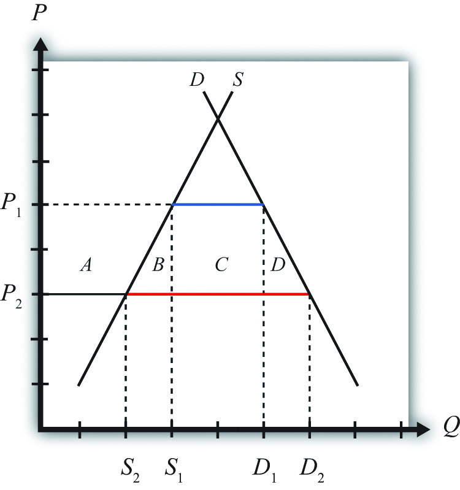
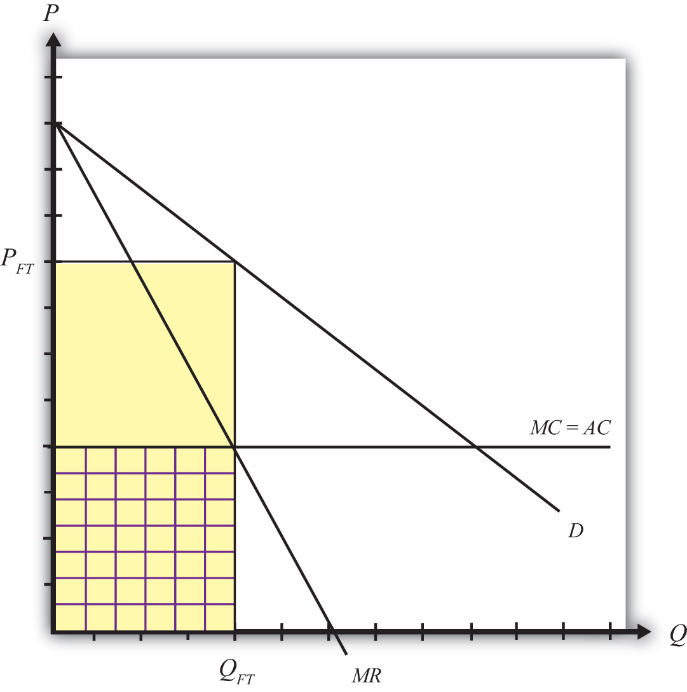
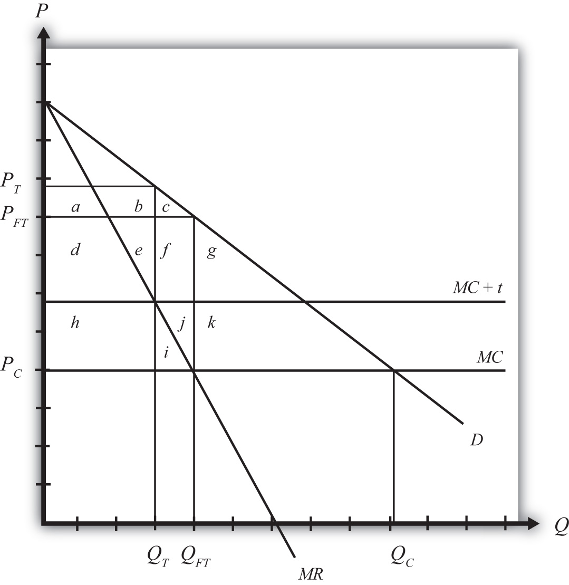
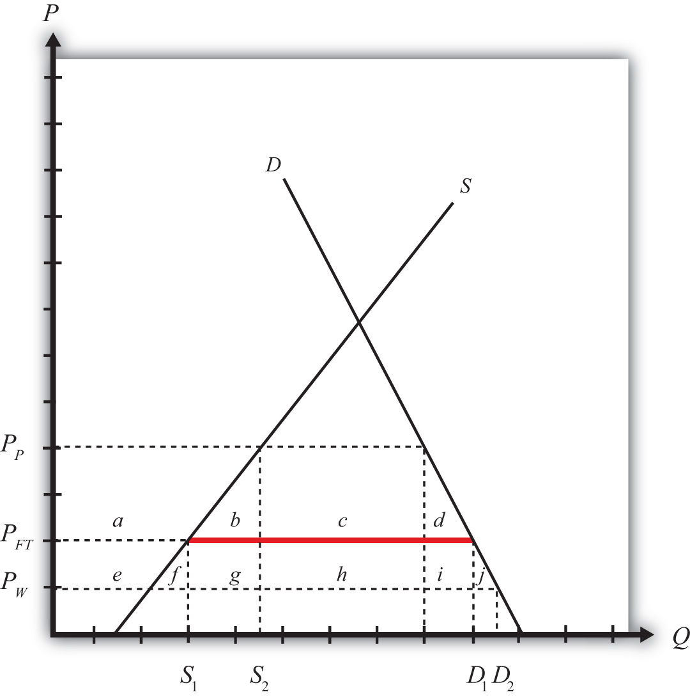
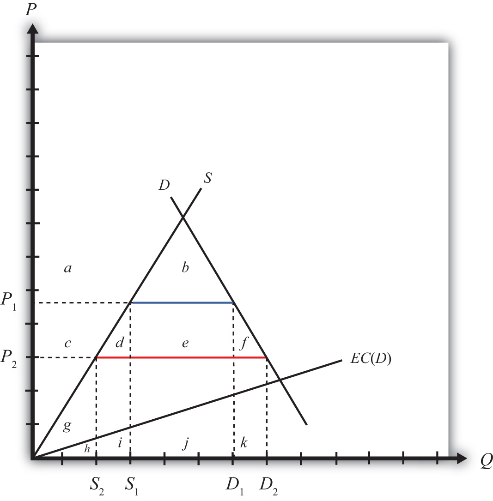
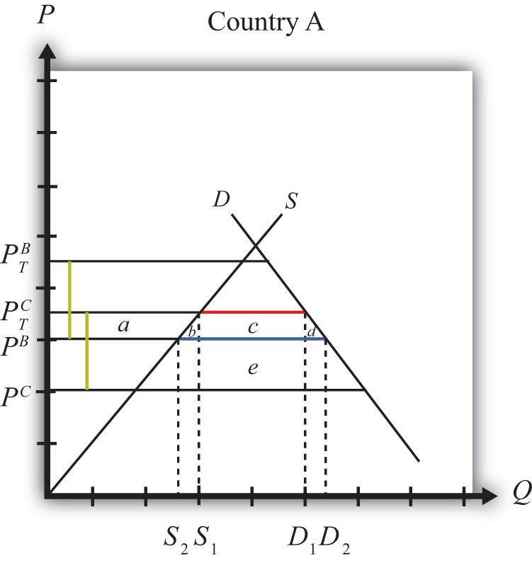
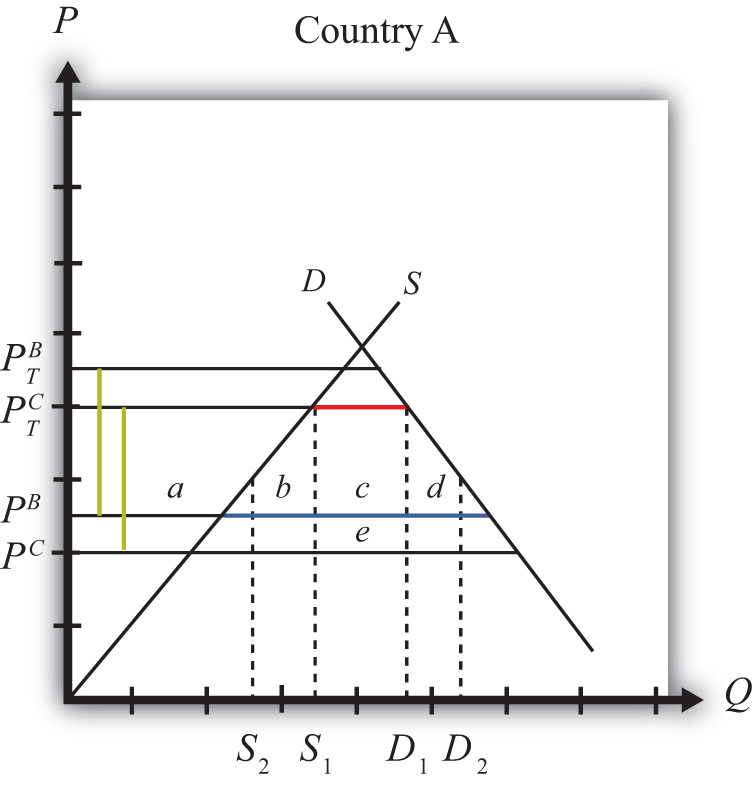
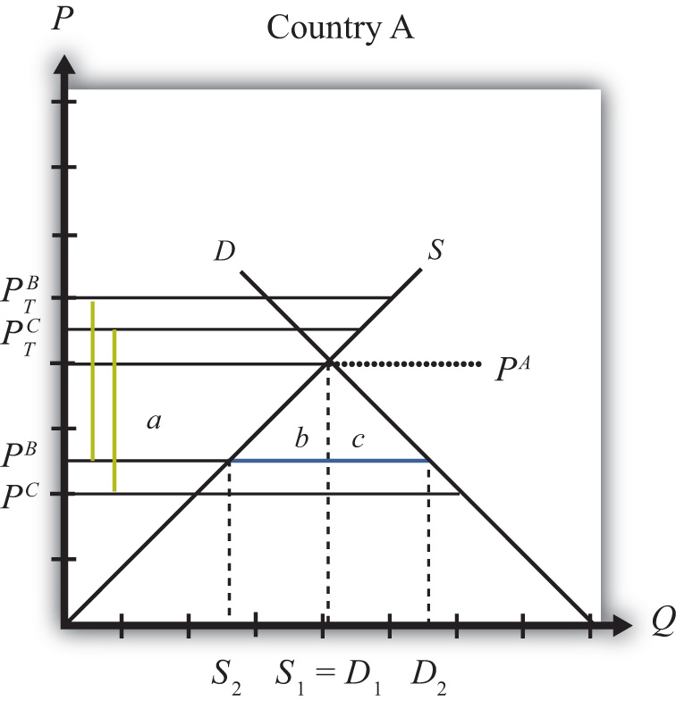

Most models showing the advantages of international trade and the costs associated with protection assume that the world is perfectly competitive. The problem is that for a variety of reasons markets are usually not perfectly competitive, at least not completely so. Economists use the term “market imperfections” to describe situations that deviate from perfect competition. And when such deviations occur, interesting things happen.
For example, it is valid to say that in a world with market imperfections, free trade may not be the best policy to maximize national welfare; instead, some type of trade protection may be better. This chapter illustrates a series of examples with models that incorporate market imperfections to demonstrate this result. However, application of another theory in economics, the theory of the second best, and some other issues are shown to mitigate this result. In other words, even though trade policies can be used to raise a nation’s welfare, there may be a better way to achieve a superior result.
Most of the models previously discussed incorporate a very standard economic assumption: namely, that markets are perfectly competitive. This was true in the Ricardian model, the Heckscher-Ohlin model, the specific factor model, and all the partial equilibrium analyses of trade and domestic policies using supply and demand curves in specific markets. The only deviation from perfect competition was in the discussion of economies-of-scale models and monopolistic competition. This is important because almost all the results concerning the effects of trade and trade policies presume that markets are perfectly competitive. But what if they’re not?
Many critics of the economic conclusions about trade argue that the assumptions of perfect competition are unrealistic and that as a result standard trade theory misses some of the important impacts of trade found in the real world. There is much truth to this. By default, perfect competition models include many assumptions that are unrealistic. However, in defense, that is the nature of model building. Simplification is necessary to make the models tractable and solvable. If we were to try to create a model that included many or most of the complexities that we can imagine are present in real-world markets, we would no doubt quickly be overwhelmed with the model’s intractability and might find it impossible to even identify an equilibrium solution. Indeed, in the real world, being in “equilibrium” might even be a rare occurrence.
Criticisms of economic theory along these lines, however, fail to recognize that economic analysis includes many attempts to incorporate market realities. Although it remains difficult to include many complexities simultaneously, it is possible to study them in a piecemeal way: one at a time.
The all-encompassing terms economists use to describe these complexities are market imperfections, or market failures, and market distortions. These cases are worthy of study because it is clear that markets rarely satisfy all the assumptions made under perfect competition. These cases offer compelling arguments for protection, including the infant industry argument, the optimal tariff argument, strategic trade policy arguments, and arguments concerning national security.
Market imperfections or market distortionsAny situation that deviates from the explicit or implicit assumptions of perfect competition., generally, are any deviations from the assumptions of perfect competition. These include monopoly and oligopoly markets, production with increasing returns to scale, markets that do not clear, negative and positive externalities in production and consumption, and the presence of public goods.
When imperfections or distortions are present in a trade model, it is usually possible to identify a trade policy that can raise aggregate economic efficiency. In this chapter many cases are demonstrated in which trade policies improve national welfare. These welfare-improving policies, although detrimental to national welfare when used in a perfectly competitive setting, act to correct the imperfections or distortions present in the market. As long as the welfare impact of the correction exceeds the standard welfare loss associated with the trade policy, the policy will raise welfare.
Trade policies with market imperfections and distortions represent applications of the theory of the second bestDescribes the class of models that consider policy implications in the presence of market imperfections and distortions., formalized by Richard G. Lipsey and Kelvin Lancaster.See R. G. Lipsey and K. Lancaster, “The General Theory of the Second Best,” Review of Economic Studies 24 (1956): 11–32. When imperfections or distortions are present in an international trade model, we describe the resulting equilibrium as second best. In this case, the standard policy prescriptions to maximize national welfare in a first-best or nondistorted economy will no longer hold true. Also, the implementation of what would be a detrimental policy in a first-best world can become a beneficial policy when implemented within a second-best world. For example, tariffs applied by a small country in the presence of domestic distortions can sometimes raise national welfare.
In 1971, Jagdish Bhagwati presented a general theory of distortions in trade situations.See J. N. Bhagwati, “The Generalized Theory of Distortions and Welfare,” in Trade, Balance of Payments and Growth, ed. J. N. Bhagwati, R. W. Jones, R. A. Mundell, and J. Vanek (Amsterdam: North-Holland Publishing Co., 1971). He characterized many of the distortions that can occur and considered which policies could be used to correct each distortion and raise national welfare. He considered not only trade policies but also domestic tax or subsidy policies. He showed that for most distortions, a trade policy is inferior (in terms of the extent to which it can raise national welfare) to other purely domestic policies. The most appropriate or first-best policyThe policy that raises welfare to the highest level possible; with market imperfections or distortions present, the policy that most directly corrects the distortion or imperfection., in general, would be the policy that most directly corrects the distortion or imperfection present in the market. This chapter provides numerous examples of policy rankings and applications of this general rule.
In one case, a trade policy does prove to be first best. This is the case of a large import or export country in international markets. In this case, the first-best policy is the optimal tariff or the optimal export tax.
Thus the results of this section are somewhat schizophrenic. On the one hand, these models offer some of the most compelling arguments supporting protection. For example, one can easily use these models to justify protection when national defense is a concern, when unemployment may arise in a market, when trade causes environmental degradation, or when there are infant industries in a country. On the other hand, in almost all of these cases, a trade policy is not the most effective policy tool available to correct the problems caused by the distortion or imperfection.
Finally, when more complex markets are considered, as when there are multiple distortions or imperfections present simultaneously, our ability to identify welfare-improving policies rapidly diminishes. The theory of the second best states that correcting one distortion in the presence of many may not improve welfare even if the policy makes perfect sense within the partial equilibrium framework containing the one distortion. The reason is that correcting one distortion may have unintentional (and probably immeasurable) impacts in other sectors due to the presence of other distortions. For example, suppose a trade policy is implemented to correct an environmental problem. One might be able to measure the welfare costs of the trade policy and the environmental benefits that would accrue to society and conclude that the benefits exceed the costs. However, the trade policy will have an impact on prices and resource allocation, potentially spreading across numerous sectors. Suppose one other sector, adversely affected, generates positive spillover effects that act to raise well-being for some groups. Then it is conceivable that the loss of the positive spillover effects would more than outweigh the net benefit accruing to society due to the environmental improvement. This means that the well-intentioned and reasonably measured environmental trade policy could result in an unintentional welfare loss for the nation. The more complex is the economy and the more distortions and imperfections that are present, the more likely it is that we simply cannot know what the national effects of trade policies will be.
Jeopardy Questions. As in the popular television game show, you are given an answer to a question and you must respond with the question. For example, if the answer is “a tax on imports,” then the correct question is “What is a tariff?”
Market imperfections and distortions, generally, are any deviations from the assumptions of perfect competition. Many of the assumptions in a perfectly competitive model are implicit rather than explicit—that is, they are not always stated.
Below are descriptions of many different types of imperfections and distortions. Perfect competition models assume the absence of these items.
Perhaps the most straightforward deviation from perfect competition occurs when there are a relatively small number of firms operating in an industry. At the extreme, one firm produces for the entire market, in which case the firm is referred to as a monopoly. A monopoly has the ability to affect both its output and the price that prevails on the market. A duopoly consists of two firms operating in a market. An oligopoly represents more than two firms in a market but less than the many, many firms assumed in a perfectly competitive market. The key distinction between an oligopoly and perfect competition is that oligopoly firms have some degree of influence over the price that prevails in the market.
Another key feature of these imperfectly competitive markets is that the firms within them make positive economic profits. The profits, however, are not sufficient to encourage entry of new firms into the market. In other words, free entry in response to profit is not possible. The typical method of justifying this is by assuming that there are relatively high fixed costs. High fixed costs, in turn, imply increasing returns to scale. Thus most monopoly and oligopoly models assume some form of imperfect competition.
Surprisingly, “large” importing countries and “large” exporting countries have a market imperfection present. This imperfection is more easily understood if we use the synonymous terms for “largeness,” monopsony and monopoly power. Large importing countries are said to have “monopsony power in tradeAnother term to describe a large importing country—that is, a country whose policy actions can affect international prices.,” while large exporting countries are said to have “monopoly power in tradeAnother term to describe a large exporting country—that is, a country whose policy actions can affect international prices..” Let’s first consider monopoly power.
When a large exporting country implements a trade policy, it will affect the world market price for the good. That is the fundamental implication of largeness. For example, if a country imposes an export tax, the world market price will rise because the exporter will supply less. An export tax set optimally will cause an increase in national welfare due to the presence of a positive terms of trade effect. This effect is analogous to that of a monopolist operating in its own market. A monopolist can raise its profit (i.e., its firm’s welfare) by restricting supply to the market and raising the price it charges its consumers. In much the same way, a large exporting country can restrict its supply to international markets with an export tax, force the international price up, and create benefits for itself with the terms of trade gain. The term monopoly “power” is used because the country is not a pure monopoly in international markets. There may be other countries exporting the product as well. Nonetheless, because its exports are a sufficiently large share of the world market, the country can use its trade policy in a way that mimics the effects caused by a pure monopoly, albeit to a lesser degree. Hence the country is not a monopolist in the world market but has “monopoly power” instead.
Similarly, when a country is a large importer of a good, we say that it has “monopsony power.” A monopsony represents a case in which there is a single buyer in a market where there are many sellers. A monopsony raises its own welfare or utility by restricting its demand for the product and thereby forcing the sellers to lower their price. By buying fewer units at a lower price, the monopsony becomes better off. In much the same way, when a large importing country places a tariff on imports, the country’s demand for that product on world markets falls, which in turn lowers the world market price. An import tariff set optimally will raise national welfare due to the positive terms of trade effect. The effects in these two situations are analogous. We say that the country has monopsony “power” because the country may not be the only importer of the product in international markets, yet because of its large size, it has “power” like a pure monopsony.
ExternalitiesEconomic actions that have effects external to the market in which the action is taken. are economic actions that have effects external to the market in which the action is taken. Externalities can arise from production processes (production externalities) or from consumption activities (consumption externalities). The external effects can be beneficial to others (positive externalities) or detrimental to others (negative externalities). Typically, because the external effects impact someone other than the producer or consumers, the producer and the consumers do not take the effects into account when they make their production or consumption decisions. We shall consider each type in turn.
Positive production externalities occur when production has a beneficial effect in other markets in the economy. Most examples of positive production externalities incorporate some type of learning effect.
For example, manufacturing production is sometimes considered to have positive spillover effects, especially for countries that are not highly industrialized. By working in a factory, the production workers and managers all learn what it takes to operate the factory successfully. These skills develop and grow over time, a process sometimes referred to as learning by doing. The skills acquired by the workers, however, are likely to spill over to others in the rest of the economy. Why? Because workers will talk about their experiences with other family members and friends. Factory managers may teach others their skills at local vocational schools. Some workers will leave to take jobs at other factories, carrying with them the skills that they acquired at the first factory. In essence, learning spillovers are analogous to infectious diseases. Workers who acquire skills in one factory in turn will infect other workers they come into contact with and will spread the skill disease through the economy.
A similar story is told concerning research and development (R&D). When a firm does R&D, its researchers learn valuable things about production that in turn are transmitted through the rest of the economy and have positive impacts on other products or production processes.
Negative production externalities occur when production has a detrimental effect in other markets in the economy. The negative effects could be felt by other firms or by consumers. The most common example of negative production externalities involves pollution or other environmental effects.
When a factory emits smoke into the air, the pollution will reduce the well-being of all the individuals who must breathe the polluted air. The polluted air will also likely require more frequent cleaning by businesses and households, raising the cost incurred by them.
Water pollution would have similar effects. A polluted river cannot be used for recreational swimming or at least reduces swimmers’ pleasures as the pollution rises. The pollution can also eliminate species of flora and fauna and change the entire ecosystem.
Positive consumption externalities occur when consumption has a beneficial effect in other markets in the economy. Most examples of positive consumption externalities involve some type of aesthetic effect.
Thus when homeowners landscape their properties and plant beautiful gardens, it benefits not only themselves but also neighbors and passersby. In fact, an aesthetically pleasant neighborhood where yards are neatly kept and homes are well maintained would generally raise the property values of all houses in the neighborhood.
One could also argue that a healthy lifestyle has positive external effects on others by reducing societal costs. A healthier person would reduce the likelihood of expensive medical treatment and lower the cost of insurance premiums or the liability of the government in state-funded health care programs.
Negative production externalities occur when consumption has a detrimental effect in other markets in the economy. Most examples of negative consumption externalities involve some type of dangerous behavior.
Thus a mountain climber in a national park runs the risk of ending up in a precarious situation. Sometimes climbers become stranded due to storms or avalanches. This usually leads to expensive rescue efforts, the cost of which is generally borne by the government and hence the taxpayers.
A drunk driver places other drivers at increased risk. In the worst outcome, the drunk driver causes the death of another. A smoker may also put others at risk if secondhand smoke causes negative health effects. At the minimum, cigarette smoke surely bothers nonsmokers when smoking occurs in public enclosed areas.
Public goodsGoods that are nonrival (the consumption or use of a good by one consumer does not diminish the usefulness of the good to another) and nonexcludable (once the good is provided, it is exceedingly costly to exclude nonpaying customers from using it). have two defining characteristics: nonrivalry and nonexcludability. NonrivalryA situation in which consumption or use of a good by one consumer does not diminish the usefulness of the good to another. means that the consumption or use of a good by one consumer does not diminish the usefulness of the good to another. NonexcludabilityA situation in which once the good is provided, it is exceedingly costly to exclude nonpaying customers from using it. means that once the good is provided, it is exceedingly costly to exclude nonpaying customers from using it. The main problem posed by public goods is the difficulty of getting people to pay for them in a free market.
The classic example of a public good is a lighthouse perched on a rocky shoreline. The lighthouse sends a beacon of light outward for miles, warning every passing ship of the danger nearby. Since two ships passing are equally warned of the risk, the lighthouse is nonrival. Since it would be impossible to provide the lighthouse services only to those passing ships that paid for the service, the lighthouse is nonexcludable.
The other classic example of a public good is national security or national defense. The armed services provide security benefits to everyone who lives within the borders of a country. Also, once provided, it is difficult to exclude nonpayers.
Information has public good characteristics as well. Indeed, this is one reason for the slow start of electronic information services on the World Wide Web. Once information is placed on a Web site, it can be accessed and used by millions of consumers almost simultaneously. Thus it is nonrival. Also, it can be difficult, although not impossible, to exclude nonpaying customers from accessing the services.
A standard assumption in general equilibrium models is that markets always clear—that is, supply equals demand at the equilibrium. In actuality, however, markets do not always clear. When markets do not clear, for whatever reason, the market is distorted.
The most obvious case of a nonclearing market occurs when there is unemployment in the labor market. Unemployment could arise if there is price stickiness in the downward direction, as when firms are reluctant to lower their wages in the face of restricted demand. Alternatively, unemployment may arise because of costly adjustment when some industries expand while others contract. As described in the immobile factor model, many factors would not immediately find alternative employment after being laid off from a contracting industry. In the interim, the factors must search for alternative opportunities, may need to relocate to another geographical location, or may need to be retrained. During this phase, the factors remain unemployed.
One key assumption often made in perfectly competitive models is that agents have perfect information. If some of the participants in the economy do not have full and complete information in order to make decisions, then the market is distorted.
For example, suppose entrepreneurs did not know that firms in an industry were making positive economic profits. Without this information, new firms would not open to force economic profit to zero in the industry. As such, imperfect information can create a distortion in the market.
Another type of distortion occurs when government policies are set in markets that are perfectly competitive and exhibit no other distortions or imperfections. These were labeled policy-imposed distortions by Jagdish Bhagwati since they do not arise naturally but rather via legislation.
Thus suppose the government of a small country sets a trade policy, such as a tariff on imports. In this case, the equilibrium that arises with the tariff in place is a distorted equilibrium.
Jeopardy Questions. As in the popular television game show, you are given an answer to a question and you must respond with the question. For example, if the answer is “a tax on imports,” then the correct question is “What is a tariff?”
The theory of the second best was formalized by Richard Lipsey and Kelvin Lancaster in 1956. The primary focus of the theory is what happens when the optimum conditions are not satisfied in an economic model. Lipsey and Lancaster’s results have important implications for the understanding of not only trade policies but also many other government policies.
In this section, we will provide an overview of the main results and indicate some of the implications for trade policy analysis. We will then consider various applications of the theory to international trade policy issues.
First of all, one must note that economic models consist of exercises in which a set of assumptions is used to deduce a series of logical conclusions. The solution of a model is referred to as an equilibrium. An equilibrium is typically described by explaining the conditions or relationships that must be satisfied in order for the equilibrium to be realized. These are called the equilibrium conditions. In economic models, these conditions arise from the maximizing behavior of producers and consumers. Thus the solution is also called an optimum.
For example, a standard perfectly competitive model includes the following equilibrium conditions: (1) the output price is equal to the marginal cost for each firm in an industry, (2) the ratio of prices between any two goods is equal to each consumer’s marginal rate of substitution between the two goods, (3) the long-run profit of each firm is equal to zero, and (4) supply of all goods is equal to demand for all goods. In a general equilibrium model with many consumers, firms, industries, and markets, there will be numerous equilibrium conditions that must be satisfied simultaneously.
Lipsey and Lancaster’s analysis asks the following simple question: What happens to the other optimal equilibrium conditions when one of the conditions cannot be satisfied for some reason? For example, what happens if one of the markets does not clear—that is, supply does not equal demand in that one market? Would it still be appropriate for the firms to set the price equal to the marginal cost? Should consumers continue to set each price ratio equal to their marginal rate of substitution? Or would it be better if firms and consumers deviated from these conditions? Lipsey and Lancaster show that, generally, when one optimal equilibrium condition is not satisfied, for whatever reason, all the other equilibrium conditions will change. Thus if one market does not clear, it would no longer be optimal for firms to set the price equal to the marginal cost or for consumers to set the price ratio equal to the marginal rate of substitution.
Consider a small perfectly competitive open economy that has no market imperfections or distortions, no externalities in production or consumption, and no public goods. This is an economy in which all resources are privately owned, the participants maximize their own well-being, firms maximize profit, and consumers maximize utility—always in the presence of perfect information. Markets always clear and there are no adjustment costs or unemployment of resources.
The optimal government policy in this case is laissez-faire. With respect to trade policies, the optimal policy is free trade. Any type of tax or subsidy implemented by the government under these circumstances can only reduce economic efficiency and national welfare. Thus with a laissez-faire policy, the resulting equilibrium would be called first best. It is useful to think of this market condition as economic nirvana since there is no conceivable way of increasing economic efficiency at a first-best equilibriumA market equilibrium that arises in the absence of any market imperfections or distortions; in other words, under the standard assumptions of perfect competition..
Of course, the real world is unlikely to be so perfectly characterized. Instead, markets will likely have numerous distortions and imperfections. Some production and consumption activities have externality effects. Some goods have public good characteristics. Some markets have a small number of firms, each of which has some control over the price that prevails and makes positive economic profit. Governments invariably set taxes on consumption, profit, property and assets, and so on. Finally, information is rarely perfectly and costlessly available.
Now imagine again a small, open, perfectly competitive economy with no market imperfections or distortions. Suppose we introduce one distortion or imperfection into such an economy. The resulting equilibrium will now be less efficient from a national perspective than when the distortion was not present. In other words, the introduction of one distortion would reduce the optimal level of national welfare.
In terms of Lipsey and Lancaster’s analysis, the introduction of the distortion into the system would sever one or more of the equilibrium conditions that must be satisfied to obtain economic nirvana. For example, suppose the imperfection that is introduced is the presence of a monopolistic firm in an industry. In this case, the firm’s profit-maximizing equilibrium condition would be to set its price greater than the marginal cost rather than equal to the marginal cost as would be done by a profit-maximizing perfectly competitive firm. Since the economic optimum obtained in these circumstances would be less efficient than in economic nirvana, we would call this equilibrium a second-best equilibriumA market equilibrium that arises in the presence of one or more market imperfections or distortions.. Second-best equilibria arise whenever all the equilibrium conditions satisfying economic nirvana cannot occur simultaneously. In general, second-best equilibria arise whenever there are market imperfections or distortions present.
An economic rationale for government intervention in the private market arises whenever there are uncorrected market imperfections or distortions. In these circumstances, the economy is characterized by a second-best rather than a first-best equilibrium. In the best of cases, the government policy can correct the distortions completely and the economy would revert back to the state under economic nirvana. If the distortion is not corrected completely, then at least the new equilibrium conditions, altered by the presence of the distortion, can all be satisfied. In either case, an appropriate government policy can act to correct or reduce the detrimental effects of the market imperfection or distortion, raise economic efficiency, and improve national welfare.
It is for this reason that many types of trade policies can be shown to improve national welfare. Trade policies, chosen appropriate to the market circumstances, act to correct the imperfections or distortions. This remains true even though the trade policies themselves would act to reduce economic efficiency if applied starting from a state of economic nirvana. What happens is that the policy corrects the distortion or imperfection and thus raises national welfare by more than the loss in welfare arising from the application of the policy.
Many different types of policies can be applied, even for the same distortion or imperfection. Governments can apply taxes, subsidies, or quantitative restrictions. They can apply these to production, to consumption, or to factor usage. Sometimes they even apply two or more of these policies simultaneously in the same market. Trade policies, like tariffs or export taxes, are designed to directly affect the flow of goods and services between countries. Domestic policies, like production subsidies or consumption taxes, are directed at a particular activity that occurs within the country but is not targeted directly at trade flows.
One prominent area of trade policy research focuses on identifying the optimal policy to be used in a particular second-best equilibrium situation. Invariably, this research has considered multiple policy options in any one situation and has attempted to rank order the potential policies in terms of their efficiency-enhancing capabilities. As with the ranking of equilibria described above, the ranking of policy options is also typically characterized using the first-best and second-best labels.
Thus the ideal or optimal policy choice in the presence of a particular market distortion or imperfection is referred to as a first-best policy. The first-best policy will raise national welfare, or enhance aggregate economic efficiency, to the greatest extent possible in a particular situation.
Many other policies can often be applied, some of which would improve welfare. If any such policy raises welfare to a lesser degree than a first-best policy, then it would be called a second-best policyA policy whose best effect is inferior to another policy.. If there are many policy options that are inferior to the first-best policy, then it is common to refer to them all as second-best policies. Only if one can definitively rank three or more policy options would one ever refer to a third-best or fourth-best policy. Since these rankings are often difficult, third-best (and so on) policies are not commonly denoted.
In a 1971 paper, Jagdish Bhagwati provided a framework for understanding the welfare implications of trade policies in the presence of market distortions.See J. N. Bhagwati, “The Generalized Theory of Distortions and Welfare,” in Trade, Balance of Payments and Growth, ed. J. N. Bhagwati, R. W. Jones, R. A. Mundell, and J. Vanek (Amsterdam: North-Holland Publishing Co., 1971). This framework applied the theory of the second best to much of the welfare analysis that had been done in international trade theory up until that point. Bhagwati demonstrated the result that trade policies can improve national welfare if they occur in the presence of a market distortion and if they act to correct the detrimental effects caused by the distortion. However, Bhagwati also showed that in almost all circumstances a trade policy will be a second-best rather than a first-best policy choice. The first-best policy would likely be a purely domestic policy targeted directly at the distortion in the market. One exception to this rule occurs when a country is “large” in international markets and thus can affect international prices with its domestic policies. In this case, as was shown with optimal tariffs, quotas, voluntary export restraints (VERs), and export taxes, a trade policy is the first-best policy.
Since Bhagwati’s paper, international trade policy analysis has advanced to include market imperfections such as monopolies, duopolies, and oligopolies. In many of these cases, it has been shown that appropriately chosen trade policies can improve national welfare. The reason trade policies can improve welfare, of course, is that the presence of the market imperfection means that the economy begins at a second-best equilibrium. The trade policy, if properly targeted, can reduce the negative aggregate effects caused by the imperfection and thus raise national welfare.
In summary, the theory of the second best provides the theoretical underpinning to explain many of the reasons that trade policy can be shown to be welfare enhancing for an economy. In most (if not all) of the cases in which a trade policy is shown to improve national welfare, the economy begins at an equilibrium that can be characterized as second best. Second-best equilibria arise whenever the market has distortions or imperfections present. In these cases, it is relatively straightforward to conceive of a trade policy that corrects the distortion or imperfection sufficiently to outweigh the detrimental effects of the policy itself. In other words, whenever market imperfections or distortions are present, it is always theoretically or conceptually possible to design a trade policy that would improve national welfare. As such, the theory of the second best provides a rationale for many different types of protection in an economy.
The main criticism suggested by the theory is that rarely is a trade policy the first-best policy choice to correct a market imperfection or distortion. Instead, a trade policy is second best. The first-best policy, generally, would be a purely domestic policy targeted directly at the market imperfection or distortion.
In the remaining sections of this chapter, we use the theory of the second best to explain many of the justifications commonly given for protection or for government intervention with some form of trade policy. In each case, we also discuss the likely first-best policies.
Jeopardy Questions. As in the popular television game show, you are given an answer to a question and you must respond with the question. For example, if the answer is “a tax on imports,” then the correct question is “What is a tariff?”
Consider a small perfectly competitive economy. Suppose this economy has a market imperfection in the form of relatively immobile factors of production across industries. We will imagine that the labor force develops sector-specific skills as the time of employment in an industry increases. Thus if a worker works in an industry—say, the textile industry—for a long period of time, her productivity in textile production rises relative to nontextile workers who might begin employment in the textile industry. Similarly, other workers become more productive in their own industries relative to a textile worker who might begin employment in another industry.
These assumptions imply that although workers might be free to move across sectors of the economy, they might not be easily or costlessly transferred. Workers in one industry, accustomed to being paid a wage proportional to their productivity, might be unwilling to accept a lower wage in another industry even though the lower wage would reflect their productivity in that industry. A worker’s reluctance to transfer could lead to a long search time between jobs as the worker continues to look for an acceptable job at an acceptable wage.
During the search period, a variety of adjustment costs would be incurred by the unemployed worker and by the government. The worker would suffer the anxiety of searching for another job. His or her family would have to adjust to a reduced income, and previous savings accounts would be depleted. At the worst, assets such as cars or homes may be lost. The government would compensate for some of the reduced income by providing unemployment compensation. This compensation would be paid out of tax revenues and thus represents a cost to others in the economy.
In some instances, the productivity of transferred workers could be raised by incurring training costs. These costs might be borne by the individual worker, as when the individual enrolls in a vocational training school. The costs might also be borne by an employer who hires initially low-productivity workers but trains them to raise their skills and productivity in the new industry.
In any case, the economy is assumed to have an unemployment imperfection that arises whenever resources must be transferred across industries. In every other respect, assume the economy is a small open economy with perfectly competitive markets and no other distortions or imperfections.
In the standard case of a small perfectly competitive economy, the optimal trade policy is free trade. Any tariff or quota on imports, although beneficial to the import-competing industry, will reduce aggregate efficiency—that is, the aggregate losses will exceed the aggregate benefits.
Imagine, however, that the economy initially has full employment of labor but that it has the unemployment imperfection described above. Suppose that initially the free trade price of textiles is given by P1 in Figure 9.1 "Unemployment in a Small Country Import Market". At that price, demand is given by D1, supply by S1, and imports by D1 − S1 (the blue line segment).
Figure 9.1 Unemployment in a Small Country Import Market
Suppose that international market conditions suddenly change such that a surge of imports begins in the textile industry.
The surge can be represented by a reduction in the world price of the imported good from P1 to P2. This would occur if there is an increase in total world supply of textiles of sufficient size to reduce the world price of the good. Since this importing country is assumed to be small, it must take the world price as given.
Domestic import-competing textile firms, to maintain profitability, would adjust to the lower free trade price by reducing output; supply would fall from S1 to S2. The lower price would stimulate demand for the product, which would rise to D2. Thus imports would rise to D2 − S2 (the red line segment). The welfare effects of the lower world price are shown in Table 9.1 "Welfare Effects of a Lower Free Trade Price".
Table 9.1 Welfare Effects of a Lower Free Trade Price
| Importing Country | |
|---|---|
| Consumer Surplus | + (A + B + C + D) |
| Producer Surplus | − A |
| Unemployment Cost | − F |
| National Welfare | (B + C + D) − F |
Consumers benefit from the lower free trade price. Producers lose in terms of a reduction in producer surplus. However, the unemployment imperfection implies that there is an additional cost that is hidden in this analysis. For domestic firms to reduce output requires them to reduce variable costs of production, which will include layoffs of workers. This means that the adjustment to the new free trade equilibrium will cause unemployment and its associated costs. We’ll represent these unemployment or adjustment costs by the variable F. Note that these costs do not appear in Figure 9.1 "Unemployment in a Small Country Import Market".
The national welfare effects of the import surge depend on how high the unemployment costs (F) are compared to the aggregate benefits (B + C + D). Thus the national welfare effect could be positive or negative.
It is possible to eliminate the costs of unemployment by applying a tariff on imports of textiles. Suppose in response to the sudden drop in the free trade price, the government responds by implementing a tariff equal to P1 − P2. In this case, the domestic price would rise by the amount of the tariff. Instead of facing the new world price P2, the domestic country will face the original price P1. The tariff would eliminate the unemployment in the industry by keeping the domestic price at the original level. Domestic supply would remain at S1 and employment would also remain at its original level.
However, implementing the tariff will also impose other costs on the economy. Table 9.2 "Welfare Effects of an Import Tariff" provides a summary of the direction and magnitude of the welfare effects to producers, consumers, and the government in the importing country. These effects are calculated relative to the economic situation after the surge of imports occurs. The aggregate national welfare effects are also shown.
Table 9.2 Welfare Effects of an Import Tariff
| Importing Country | |
|---|---|
| Consumer Surplus | − (A + B + C + D) |
| Producer Surplus | + A |
| Govt. Revenue | + C |
| Unemployment Cost | + F |
| National Welfare | F − (B + D) |
Tariff effects on the importing country’s consumers. Consumers of the product in the importing country suffer a reduction in well-being as a result of the tariff. The increase in the domestic price of both imported goods and the domestic substitutes reduces the amount of consumer surplus in the market. Refer to Table 9.2 "Welfare Effects of an Import Tariff" and Figure 9.1 "Unemployment in a Small Country Import Market" to see how the magnitude of the change in consumer surplus is represented.
Tariff effects on the importing country’s producers. Producers in the importing country experience an increase in well-being as a result of the tariff. The increase in the price of their product on the domestic market increases producer surplus in the industry. Refer to Table 9.2 "Welfare Effects of an Import Tariff" and Figure 9.1 "Unemployment in a Small Country Import Market" to see how the magnitude of the change in producer surplus is represented.
Tariff effects on the importing country’s government. The government receives tariff revenue as a result of the tariff. Who benefits from the revenue depends on how the government spends it. Typically, the revenue is simply included as part of the general funds collected by the government from various sources. In this case, it is impossible to identify precisely who benefits. However, these funds help support many government spending programs that presumably either help most people in the country, as is the case with public goods, or target certain worthy groups. Thus someone within the country is the likely recipient of these benefits. Refer to Table 9.2 "Welfare Effects of an Import Tariff" and Figure 9.1 "Unemployment in a Small Country Import Market" to see how the magnitude of the tariff revenue is represented.
The tariff eliminates the unemployment or adjustment costs that would have been incurred in the absence of protection. Hence welfare rises by the amount F.
The aggregate welfare effect for the importing country is found by summing the gains and losses to consumers, producers, the government, and the potentially unemployed workers. The net effect consists of three components: a positive effect on workers who are saved from the negative effects of unemployment (F), a negative production distortion (B), and a negative consumption distortion (D).
Whether the country benefits from protection in the presence of an unemployment imperfection depends on how the cost of unemployment compares with the standard aggregate welfare cost of protection. If the aggregate costs of unemployment (F) that would arise in the absence of a tariff exceed the deadweight costs of the tariff (i.e., B + D), then national welfare would rise when the tariff is implemented. The tariff would eliminate the adjustment costs of unemployment while imposing other lower costs on consumers who would lose the benefit of lower prices.
With a more completely specified model, one could determine the optimal level of protection in these circumstances. It is not necessarily true that the optimal tariff will be the tariff that maintains the price at the original level. Instead, the optimal tariff will be achieved when the marginal cost of raising it further is just equal to the marginal benefit of the reduction in unemployment costs. This may be lower than the level set in the example above.
Of course, it is also conceivable that the aggregate costs of the tariff (B + D) exceed the aggregate adjustment costs (F) incurred by those who would become unemployed. In this case, the optimal tariff would remain zero and it would be best for the country to allow the adjustment to proceed. Thus the mere presence of unemployment is not sufficient evidence to justify the use of protection.
Also, even if protection is beneficial in the aggregate, it is important to remember that protection generates a redistribution of income. A tariff will force consumers to pay higher prices than they would have to pay in free trade. The extra costs to consumers are essentially being transferred to the firms and workers in the import-competing industry and to the government in the form of tariff revenue.
Finally, one could object to protection by noting that the benefit of protection—that is, eliminating unemployment—represents the permanent avoidance of temporary costs. If free trade were maintained in the face of the import surge, unemployment and its associated costs would be incurred, but these costs are likely to be temporary. Eventually workers will find alternative employment opportunities in other industries and the adjustment costs will dissipate. However, the benefits of free trade in the form of lower prices for consumers would be permanent benefits. Lower prices would presumably prevail period after period into the future. This means that even if the one-period benefits of eliminating unemployment exceed the one-period costs of protection, this may not hold if evaluated over multiple periods.
Another objection to the use of a tariff to eliminate the cost of unemployment is that a tariff will be a second-best policy to correct the unemployment imperfection. The first-best policy would be a policy targeted more directly at the source of the market imperfection—in this case, the unemployment. Many such policies would be superior to a tariff. One easy-to-analyze policy is a production subsidy. A production subsidy means that the government would make payments, say, per unit of output produced by the domestic firms.
Begin with the same surge of imports described in Figure 9.1 "Unemployment in a Small Country Import Market" in the import market and with the same welfare costs and benefits. This time, however, suppose that the government offers a production subsidy sufficient to raise output in the domestic industry back to the original level. Recall that a production subsidy will raise the producer’s price by the amount of the subsidy for a small country and will maintain the consumer price at its original level. A specific production subsidy “s” set equal to the difference P1 − P2 would cause the producer price to rise to P1 while the consumer price would remain at P2. The higher producer price will induce domestic firms to raise their supply back to the original level of S1, but the constant consumer price will keep domestic demand at D2.
Table 9.3 "Welfare Effects of a Production Subsidy" provides a summary of the direction and magnitude of the welfare effects to producers, consumers, and the government in the importing country as a result of the production subsidy. These effects are calculated relative to the economic situation after the surge of imports occurs. The aggregate national welfare effects are also shown.
Table 9.3 Welfare Effects of a Production Subsidy
| Importing Country | |
|---|---|
| Consumer Surplus | 0 |
| Producer Surplus | + A |
| Govt. Revenue | − (A + B) |
| Unemployment Cost | + F |
| National Welfare | F − B |
Production subsidy effects on the importing country’s consumers. Consumers of the product in the importing country are unaffected by the subsidy since there is no change in the domestic price of the good.
Production subsidy effects on the importing country’s producers. Producers in the importing country experience an increase in well-being as a result of the tariff. Although they receive the same free trade price in the market as before, they now also receive the per-unit subsidy payment from the government. That means that their surplus is measured off of the original supply curve. Refer to Table 9.3 "Welfare Effects of a Production Subsidy" and Figure 9.1 "Unemployment in a Small Country Import Market" to see how the magnitude of the change in producer surplus is represented.
Production subsidy effects on the importing country’s government. The government must pay the per-unit production subsidy. The per-unit subsidy rate is given as the price difference (P1 − P2), while the quantity of domestic production is given by S1. The product of these two terms gives the value of the subsidy payments made by the government. Who loses from the subsidy payments depends on where the tax revenue is collected. Generally, it is impossible to identify precisely which taxpayers lose. Refer to Table 9.3 "Welfare Effects of a Production Subsidy" and Figure 9.1 "Unemployment in a Small Country Import Market" to see how the magnitude of the subsidy payments is represented.
The subsidy eliminates the unemployment or adjustment costs that would have been incurred in the absence of the subsidy. Hence welfare rises by the amount F.
The aggregate welfare effect for the importing country is found by summing the gains and losses to consumers, producers, the government, and the potentially unemployed workers. The net effect consists of two components: a positive effect on workers who are saved from the negative effects of unemployment (F) and a negative production distortion (B).
Whether the country benefits from a production subsidy in the presence of an unemployment imperfection depends on how the cost of unemployment compares with the standard aggregate welfare cost of protection. If the aggregate costs of unemployment (F) that would arise in the absence of a tariff exceed the production efficiency losses of the subsidy (i.e., B), then national welfare would rise when the production subsidy is implemented. The production subsidy would eliminate the adjustment costs of unemployment but would cost the taxpayer extra money to finance the subsidy.
However, the key difference is the comparison of the production subsidy with the import tariff. Both policy actions could generate an improvement in national welfare, but the production subsidy would raise national welfare by more than the import tariff. In Figure 9.1 "Unemployment in a Small Country Import Market", it can be seen that F − B > F − B − D. For this reason, we might refer to the production subsidy as a first-best policy, while the import tariff is second best.
The production subsidy is superior because it corrects the imperfection more directly. By targeting production, the production subsidy creates a production distortion (B) but eliminates an unemployment imperfection. The tariff, on the other hand, creates a production and consumption distortion (B + D) to eliminate the same unemployment imperfection. Generally, it is preferable to introduce as few other distortions as possible in designing a policy to correct another.
This example shows how a production subsidy is superior to a tariff. However, in the case of an unemployment imperfection, there are likely to be policies superior to the production subsidy. It would seem that some policies would target the imperfection even more directly.
For example, the government could use a labor employment subsidy if the primary problem were the potential unemployment of labor. In this case, the government would make a payment to firms for each worker hired. If set at the correct level, the subsidy could eliminate the negative effects caused by unemployment. However, since firms would remain free to substitute labor for other inputs, industry production levels might not be the same as with a production subsidy. Firms’ freedom to adjust output could further reduce the cost of the additional distortion.
A labor employment subsidy, however, would not solve the problem of long-term adjustment. As mentioned, the cost associated with unemployment is likely to be temporary, while the cost of eliminating the unemployment with a subsidy would require a permanent taxpayer cost. Thus an even more superior policy would probably be one that is targeted even more directly at the source of the problem. Recall that the problem is in the adjustment process. Superior policies might be those that facilitate the adjustment of labor resources across industries.
In a sense, this is the purpose behind policies like trade adjustment assistance (TAA). TAA was originally implemented in the 1962 U.S. Trade Act. It provides for the extension of unemployment compensation, loans, and grants for technical retraining and other types of support programs for workers who are displaced as a result of trade liberalization. If TAA is designed and implemented in a cost-efficient manner, it could be first among the contenders for a first-best policy to correct an unemployment imperfection.
Consider the following imperfect market situations in the table below. From the following list of policy options, identify all types of trade policies and all types of domestic policies that could potentially raise national welfare in the presence of each imperfection. Consider only the partial equilibrium effects of each policy.
Options: An import tariff, an import quota, a voluntary export restraint (VER), an export tax, an export subsidy, a production tax, a production subsidy, a consumption tax, and a consumption subsidy.
Table 9.4 Welfare Improving Policies
| Trade Policy | Domestic Policy | |
|---|---|---|
| 1. Unemployment in a small import-competing industry suffering from a surge of imports | ||
| 2. A small country in which an export decline causes unemployment |
Consider the policy actions listed along the top row of the table below. In the empty boxes, use the following notation to indicate the effect of each policy on the variables listed in the first column. Use a partial equilibrium model to determine the answers and assume that the shapes of the supply and demand curves are “normal.” Assume that none of the policies begin with, or result in, prohibitive policies. Use the following notation:
+ the variable increases
– the variable decreases
0 the variable does not change
A the variable change is ambiguous (i.e., it may rise, it may fall)
Table 9.5 Effects of Policies to Alleviate Unemployment
| Import Tariff by a Small Country with Unemployment | Production Subsidy by a Small Country with Unemployment | |
|---|---|---|
| Domestic Consumer Price | ||
| Domestic Producer Price | ||
| Domestic Industry Employment | ||
| Unemployment Welfare Effect | ||
| Domestic Consumer Welfare | ||
| Domestic Producer Welfare | ||
| Domestic Government Revenue | ||
| Domestic National Welfare |
One of the most notable arguments for protection is known as the infant industryAn industry, most often in a developing country, that cannot compete in international markets in free trade but that, if given time to learn and develop, could be world-class efficient. argument. The argument claims that protection is warranted for small new firms, especially in less-developed countries. New firms have little chance of competing head-to-head with the established firms located in the developed countries. Developed country firms have been in business longer and over time have been able to improve their efficiency in production. They have better information and knowledge about the production process, about market characteristics, about their own labor market, and so on. As a result, they are able to offer their product at a lower price in international markets and still remain profitable.
A firm producing a similar product in a less-developed country (LDC), on the other hand, would not have the same production technology available to it. Its workers and management would lack the experience and knowledge of its developed country rivals and thus would most likely produce the product less efficiently. If forced to compete directly with the firms in the developed countries, the LDC firms would be unable to produce profitably and thus could not remain in business.
Protection of these LDC firms, perhaps in the form of an import tariff, would raise the domestic price of the product and reduce imports from the rest of the world. If prices are raised sufficiently, the domestic firms would be able to cover their higher production costs and remain in business. Over time, these LDC firms would gain production and management experience that would lower their production costs. Essentially, the firms would follow the same path that the developed country firms had followed to realize their own production efficiency improvements. Protection, then, allows an infant industry time to “grow up.”
Furthermore, since the LDC firms would improve their productive efficiency over time, the protective tariffs could be gradually reduced until eventually, when the tariffs are eliminated, they would compete on an equal footing with the developed country firms.
Many people have argued that this was precisely the industrial development strategy that was pursued by countries like the United States and Germany during their rapid industrial development before the turn of the twentieth century. Both the United States and Germany had high tariffs during their industrial revolution periods. These tariffs helped protect fledgling industries from competition with more-efficient firms in Britain and may have been the necessary requirement to stimulate economic growth.
One counterargument to this theory is that by protecting infant industries, countries are not allocating resources in the short run on the basis of comparative advantage. The Ricardian and Heckscher-Ohlin models of trade show that resources will be allocated most efficiently if countries produce goods whose before-trade prices are lower than those in the rest of the world. This implies that the United States and Germany should have simply imported the cheaper industrial goods from Britain and shifted their own resources to other goods in which they had a comparative advantage if they wished to maximize economic efficiency.
The reason for the discrepancy in policy prescriptions can easily be seen by noting the difference between static comparative advantage and dynamic comparative advantage. The traditional Ricardian theory of comparative advantage identifies the most efficient allocation of resources at one point in time. In this sense, it is a static theory. The policy prescription is based on a snapshot in time.
On the other hand, the infant industry argument is based on a dynamic theory of comparative advantage. In this theory, one asks what is best for a country (i.e., what is most efficient) in the long run. The most efficient long-run strategy may well be different from what is best initially. Here’s why.
The problem faced by many LDCs is that their static comparative advantage goods, in most instances, happen to be agricultural commodities and natural resources. Reliance on production of these two types of goods can be problematic for LDCs. First of all, the prices of agricultural commodities and natural resources have historically been extremely volatile. In some years prices are very high, and in other years the prices are very low. If a country allocates many of its resources to production of goods with volatile prices, then the gross domestic product (GDP) will fluctuate along with the prices. Some years will be very good, and others will be very bad. Although a wealthier country may be able to smooth income by effectively using insurance programs, a poor country might face severe problems, perhaps as severe as famine, in years when the prices of their comparative advantage goods are depressed.
In addition, many people argue that the management and organizational skills necessary to produce agricultural goods and natural resources are not the same as the skills and knowledge needed to build an industrial economy. If true, then concentrating production in one’s static comparative advantage goods would prevent the development of an industrial economy. Thus one of the reasons for protecting an infant industry is to stimulate the learning effects that will improve productive efficiency. Furthermore, these learning effects might spill over into the rest of the economy as managers and workers open new businesses or move to other industries in the economy. To the extent that there are positive spillovers or externalities in production, firms are unlikely to take account of these in their original decisions. Thus, if left alone, firms might produce too little of these types of goods and economic development would proceed less rapidly, if at all.
The solution suggested by the infant industry argument is to protect the domestic industries from foreign competition in order to generate positive learning and spillover effects. Protection would stimulate domestic production and encourage more of these positive effects. As efficiency improves and other industries develop, economic growth is stimulated. Thus by protecting infant industries a government might facilitate more rapid economic growth and a much faster improvement in the country’s standard of living relative to specialization in the country’s static comparative advantage goods.
Consider the market for a manufactured good such as textiles in a small, less-developed country.
Suppose that the supply and demand curves in the country are as shown in Figure 9.2 "An Infant Industry in a Small Importing Country". Suppose initially free trade prevails and the world price of the good is P1. At that price, consumers would demand D1, but the domestic supply curve is too high to warrant any production. This is the case, then, where domestic producers simply could not produce the product cheaply enough to compete with firms in the rest of the world. Thus the free trade level of imports would be given by the blue line segment, which is equal to domestic demand, D1.
Figure 9.2 An Infant Industry in a Small Importing Country
Suppose that the infant industry argument is used to justify protection for this currently nonexistent domestic industry. Let a specific tariff be implemented that raises the domestic price to P2. In this case, the tariff would equal the difference between P2 and P1—that is, t = P2 − P1. Notice that the increase in domestic price is sufficient to stimulate domestic production of S2. Demand would fall to D2 and imports would fall to D2 − S2 (the red line segment).
The static (i.e., one-period) welfare effects of the import tariff are shown in Table 9.6 "Static Welfare Effects of a Tariff".
Table 9.6 Static Welfare Effects of a Tariff
| Importing Country | |
|---|---|
| Consumer Surplus | − (A + B + C + D) |
| Producer Surplus | + A |
| Govt. Revenue | + C |
| National Welfare | − B − D |
Consumers of textiles are harmed because of the higher domestic price of the good. Producers gain in terms of producer surplus. In addition, employment is created in an industry that did not even exist before the tariff. Finally, the government earns tariff revenue, which benefits some other segment of the population.
The net national welfare effect of the import tariff is negative. Although some segments of the population benefit, two deadweight losses to the economy remain. Area B represents a production efficiency loss, while area D represents a consumption efficiency loss.
Now suppose that the infant industry argument is valid and that by stimulating domestic production with a temporary import tariff, the domestic industry improves its own productive efficiency. We can represent this as a downward shift in the domestic industry supply curve. In actuality, this shift would probably occur gradually over time as the learning effects are incorporated in the production process. For analytical simplicity, we will assume that the effect occurs as follows. First, imagine that the domestic industry enjoys one period of protection in the form of a tariff. In the second period, we will assume that the tariff is removed entirely but that the industry experiences an instantaneous improvement in efficiency such that it can maintain production at its period one level but at the original free trade price. This efficiency improvement is shown as a supply curve shift from S to S′ in Figure 9.3 "Efficiency Improvement in a Small Importing Country".
Figure 9.3 Efficiency Improvement in a Small Importing Country

This means that in the second period, free trade again prevails. The domestic price returns to the free trade price of P1, while domestic demand rises to D1. Because of the efficiency improvement, domestic supply in free trade is given by S2 and the level of imports is D1 − S2 (the blue segment).
The static (one-period) welfare effects of the tariff removal and efficiency improvement are summarized in Table 9.7 "Static Welfare Effects of Tariff Removal and Efficiency Improvement". Note that these effects are calculated relative to the original equilibrium before the original tariff was implemented. We do this because we want to identify the welfare effects in each period relative to what would have occurred had the infant industry protection not been provided.
Table 9.7 Static Welfare Effects of Tariff Removal and Efficiency Improvement
| Importing Country | |
|---|---|
| Consumer Surplus | 0 |
| Producer Surplus | + E |
| Govt. Revenue | 0 |
| National Welfare | + E |
Consumers again face the same free trade price that they would have faced if no protection had been offered. Thus they experience no loss or gain. Producers, however, face a new supply curve that generates a producer surplus of + E at the original free trade price. The government tariff is removed, so the government receives no tariff revenue. The net national welfare effect for the second period then is simply the gain in producer surplus.
The overall welfare impact over the two periods relative to no infant industry protection over two periods is simply the sum of each period’s welfare effects. This corresponds to the sum of areas (+ E − B − D), which could be positive or negative. If the second-period producer surplus gain exceeds the first-period deadweight losses, then the protection has a positive two-period effect on national welfare.
But wait. Presumably the efficiency improvement in the domestic industry would remain, if not improve, in all subsequent periods as well. Thus it is not complete to consider the effects only over two periods. Instead, and for simplicity again, suppose that the new supply curve prevails in all subsequent periods. In this case, the true dynamic national welfare effects would consist of area E multiplied by the number of future periods we wish to consider minus the one-period deadweight losses. Thus even if the costs of the tariff are not made up in the second period, they may well be made up eventually at some point in the future. This would make it even more likely that the temporary protection would be beneficial in the long run.
If, in addition to the direct efficiency effects within the industry, there are spillover efficiency effects on other industries within the domestic economy, then the likelihood that temporary protection is beneficial is enhanced even further. In other words, over time, workers and managers from the protected industries may establish firms or take jobs in other sectors of the economy. Since they will bring their newly learned skills with them, it will cause an improvement in productive efficiency in those sectors as well. In this way, the supply of many manufacturing industries will be increased, allowing these sectors to compete more easily with firms in the rest of the world. Industrialization and GDP growth then is stimulated by the initial protection of domestic industries.
In summary, we have shown the possibility that protection of an infant industry may be beneficial for an economy. At the heart of the argument is the assumption that production experience generates efficiency improvements either directly in the protected industry or indirectly in other industries as a learning spillover ensues. The infant industry argument relies on a dynamic view of the world rather than the static description used in classical trade models. Although protection may be detrimental to national welfare in the short run, it is conceivable that the positive dynamic long-run effects will more than outweigh the short-run (or static) effects.
The main economic argument against infant industry protection is that protection is likely to be a second-best policy choice rather than a first-best policy choice. The key element of the infant industry argument is the presence of a positive dynamic production externality. It is assumed that production experience causes learning, which improves future productive efficiency. Alternatively, it is assumed that these learning effects spill over into other industries and improve those industries’ future productive efficiencies as well.
The theory of the second best states that in the presence of a market distortion, such as a production externality, it is possible to conceive of a trade policy that can improve national welfare. However, in this case, the trade policy—namely, the import tariff—is not the first-best policy because it does not attack the distortion most directly. In this case, the more-efficient policy is a production subsidy targeted at the industries that generate the positive learning effects.
To demonstrate this result, consider the following analytical example. We will use the same supply and demand conditions as depicted in Figure 9.3 "Efficiency Improvement in a Small Importing Country". The domestic supply and demand curves are given by D and S, respectively. The initial free trade world price of the good is P1. At that price, consumers would demand D1, but the domestic supply curve is too high to warrant any production. Thus the level of imports is given by D1.
Now suppose that the government implements a specific production subsidy equal to the difference in prices, P2 − P1. The subsidy would raise the producer price by the amount of the subsidy to P2, and hence domestic supply will rise to S2. The domestic consumer price would remain at P1, so demand would remain at D1. Imports would fall to D1 − S2.
The static (i.e., one-period) welfare effects of the production subsidy are shown in Table 9.8 "Static Welfare Effects of a Production Subsidy".
Table 9.8 Static Welfare Effects of a Production Subsidy
| Importing Country | |
|---|---|
| Consumer Surplus | 0 |
| Producer Surplus | + A |
| Govt. Revenue | − (A + B) |
| National Welfare | − B |
Consumers of textiles are left unaffected by the subsidy since the domestic price remains the same. Producers gain in terms of producer surplus since the subsidy is sufficient to cause production to begin. In addition, employment is created in an industry. The government, however, must pay the subsidy. Thus someone pays higher taxes to fund the subsidy.
The net national welfare effect of the production subsidy is negative. Although some segments of the population benefit, there remains a production efficiency loss.
Note, however, that relative to an import tariff that generates the same level of domestic production, the subsidy is less costly in the aggregate. The production subsidy causes only a production efficiency loss, while the tariff causes an additional consumption efficiency loss. If the positive dynamic gains in efficiency in subsequent periods are the same, then the production subsidy would generate the same positive stream of benefits but at a lower overall cost to the country. For this reason, the production subsidy is the first-best policy to choose in light of the dynamic production externality. The import tariff remains second best.
For this reason, economists sometimes argue that although an import tariff may indeed be beneficial in the case of infant industries, it does not necessarily mean that protection is appropriate.
Political economy problems. Political pressures in democratic economies can make it difficult to implement infant industry protection in its most effective manner. In order for protection to work in the long run, it is important that protection be temporary. There are two main reasons for this. First, it may be that the one-period efficiency improvement is less than the sum of the deadweight costs of protection. Thus if protection is maintained, then the sum of the costs may exceed the efficiency improvements and serve to reduce national welfare in the long run. Second, and more critically, if protection were expected to be long lasting, then the protected domestic firms would have less incentive to improve their productive efficiency. If political pressures are brought to bear whenever the tariffs are scheduled to be reduced or removed, industry representatives might convince legislators that more time is needed to guarantee the intended efficiency improvements. In other words, firms might begin to claim that they need more time to compete against firms in the rest of the world. As long as legislators provide more time to catch up to world efficiency standards, protected firms have little incentive to incur the investment and training costs necessary to compete in a free market. After all, the tariff keeps the price high and allows even relatively inefficient production to produce profits for the domestic firms.
Thus one big problem with applying the infant industry protection is that the protection itself may eliminate the need for the firms to grow up. Without the subsequent efficiency improvements, protection would only generate costs for the economy in the aggregate.
Informational problems. In order for infant industry protection to work, it is important for governments to have reliable information about industries in their economies. They need to know which industries have strong learning effects associated with production and which industries are most likely to generate learning spillover effects to other industries. It would also be useful to know the size of the effects as well as the timing. But governments must decide not only which industries to protect but also how large the protective tariffs should be and over what period of time the tariff should be reduced and eliminated. If the government sets the tariff too low, the protection may be insufficient to generate very much domestic production. If the tariff is set too high, the costs of the tariff might outweigh the long-term efficiency improvements. If the tariff is imposed for too long a period, then firms might not have enough of an incentive to make the changes necessary to improve efficiency. If set for too short a time, then firms may not learn enough to compete with the rest of the world once the tariffs are removed.
Thus in order for infant industry protection to work, it is important to set the tariff for the correct industries, at the correct level, and for the correct period of time. Determining the correct industries, tariff level, and time period is not a simple matter. Indeed, some people argue that it is impossible to answer these questions with a sufficient amount of accuracy to warrant applying these policies.
Failure of import-substitution strategies. One popular development strategy in the 1950s and 1960s was known as import substitution. Essentially, this strategy is just an application of the infant industry argument. However, many of the countries that pursued these kinds of inward-looking strategies, most notably countries in Latin America and Africa, performed considerably less well economically than many countries in Asia. The Asian countries—such as South Korea, Taiwan, Hong Kong, and Japan—pursued what have been labeled export-oriented strategies instead. Since many of these Southeast Asian countries performed so much better economically, it has lent some empirical evidence against the application of infant industry protection.
Jeopardy Questions. As in the popular television game show, you are given an answer to a question and you must respond with the question. For example, if the answer is “a tax on imports,” then the correct question is “What is a tariff?”
Consider a domestic market supplied by a foreign monopoly firm. The domestic market consists of many consumers who demand the product but has no domestic producers of the product. All supply of the product comes from a single foreign firm.
Although this situation is not very realistic, it is instructive as an application of the theory of the second best. In this case, the market imperfection is that there are not a multitude of firms supplying the market. Rather, we have assumed the extreme opposite case of a monopoly supplier. To make this an international trade story, we simply assume the monopoly happens to be a foreign firm.
Consider the market described in Figure 9.4 "Imports from a Foreign Monopoly Firm". Domestic consumer demand is represented by a linear demand curve, D. When demand is linear, it follows that the marginal revenue curve will have twice the slope and will equal demand when the quantity is zero. Let the flat MC line represent a constant marginal cost in production for the foreign monopolist.
Figure 9.4 Imports from a Foreign Monopoly Firm
Assuming the monopolist maximizes profit, the profit-maximizing output level is found by setting marginal cost equal to marginal revenue. Why? Profit-maximizing output occurs at the quantity level QFT. At that quantity, the monopolist would set the price at PFT, the only price that equalizes demand with its supply.
The monopolist’s profit is the difference between total revenue and total cost. Total revenue is given by the product (PFTQFT), the yellow area in the graph. Total cost is equal to average cost (AC) multiplied by output (QFT), given by the checkered area. The monopolist’s profit is represented by the uncheckered yellow rectangular area in Figure 9.4 "Imports from a Foreign Monopoly Firm".
Generally, strategic trade policy refers to cases of advantageous protection when there are imperfectly competitive markets. The case of a foreign monopolist represents one such case.
More specifically, though, the presence of imperfect competition implies that firms can make positive economic profit. Strategic trade policies typically involve the shifting of profits from foreign firms to domestic firms. In this way, national welfare can be improved, although it is often at the expense of foreign countries.
In this example, we shall consider the welfare effects of a specific tariff set equal to t. The tariff will raise the cost of supplying the product to the domestic market by exactly the amount of the tariff. We can represent this in Figure 9.5 "A Tariff on Imports from a Foreign Monopoly Firm" by shifting the marginal cost curve upward by the amount of the tariff to MC + t. The monopolist will reduce its profit-maximizing output to QT and raise its price to PT. Note that the price rises by less than the amount of the tariff.
Figure 9.5 A Tariff on Imports from a Foreign Monopoly Firm

Table 9.9 "Welfare Effects of a Tariff" provides a summary of the direction and magnitude of the welfare effects to producers, consumers, and the government in the importing country as a result of the import tariff. The aggregate national welfare effects are also shown.
Table 9.9 Welfare Effects of a Tariff
| Importing Country | |
|---|---|
| Consumer Surplus | − (a + b + c) |
| Producer Surplus | 0 |
| Govt. Revenue | + d |
| National Welfare | d − (a + b + c) |
Import tariff effects on the importing country’s consumers. Consumers of the product in the importing country suffer a reduction in surplus because of the higher price that prevails. Refer to Table 9.9 "Welfare Effects of a Tariff" and Figure 9.5 "A Tariff on Imports from a Foreign Monopoly Firm" to see how the magnitude of the change in producer surplus is represented.
Import tariff effects on the importing country’s producers. It is assumed that there are no domestic producers of the goods; thus there are no producer effects from the tariff.
Import tariff effects on the importing country’s government. The government receives tariff revenue given by the per-unit tax (t) multiplied by the quantity of imports (QT). Who gains from the tariff revenue depends on how the government spends the money. Presumably these revenues help support the provision of public goods or help sustain transfer payments. In either case, someone in the economy ultimately benefits from the revenue. Refer to Table 9.9 "Welfare Effects of a Tariff" and Figure 9.5 "A Tariff on Imports from a Foreign Monopoly Firm" to see how the magnitude of the subsidy payments is represented.
The aggregate welfare effect for the importing country is found by summing the gains and losses to consumers, producers, and the government. The net effect consists of two components: a positive effect on the recipients of the government tariff revenue (d) and a negative effect on consumers (a + b + c), who lose welfare due to higher prices.
If demand is linear, it is straightforward to show that the gains to the country will always exceed the losses for some positive nonprohibitive tariff. In other words, there will exist a positive optimal tariff. Thus a tariff can raise national welfare when the market is supplied by a foreign monopolist.
One reason for this positive effect is that the tariff essentially shifts profits away from the foreign monopolist to the domestic government. Note that the original profit level is given by the large blue rectangle shown in Figure 9.5 "A Tariff on Imports from a Foreign Monopoly Firm". When the tariff is implemented, the monopolist’s profit falls to a level given by the red rectangle. Thus, in this case, the tariff raises aggregate domestic welfare as it reduces the foreign firm’s profit.
Although a tariff can raise national welfare in this case, it is not the first-best policy to correct the market imperfection. A first-best policy must attack the imperfection more directly. In this case, the imperfection is the monopolistic supply of the product to the market. A monopoly maximizes profit by choosing an output level such that marginal revenue is equal to marginal cost. This rule deviates from what a perfectly competitive firm would do—that is, set price equal to marginal cost. When a firm is one among many, it must take the price as given. It cannot influence the price by changing its output level. In this case, the price is its marginal revenue. However, for a monopolist, which can influence the market price, price exceeds marginal revenue. Thus when the monopolist maximizes profit, it sets a price greater than marginal cost. This deviation—that is, P > MC—is at the core of the market imperfection.
The standard way of correcting this type of imperfection in a domestic context is to regulate the industry. For example, electric utilities are regulated monopolies in the United States. Power can generally be purchased from only one company in any geographical area. To assure that these firms do not set exorbitant prices, the government issues a set of pricing rules that the firms must follow. The purpose is to force the firms to set prices closer, if not equal to, the marginal cost of production.
Now, in the case of utilities, determining the marginal cost of production is a rather difficult exercise, so the pricing rules to optimally regulate the industry are relatively complicated. In the case of a foreign monopolist with a constant marginal cost supplying a domestic market, however, the optimal policy is simple. The domestic government could merely set a price ceiling equal to the firm’s marginal cost in production.
To see why a price ceiling is superior to a tariff, consider Figure 9.6 "A Price Ceiling on Imports from a Foreign Monopoly Firm". A second-best policy is the tariff. It would raise national welfare by the area (h − a − b − c), which as mentioned will be positive for some tariffs and for a linear demand curve. The first-best policy is a price ceiling set equal to the marginal cost at PC. The price ceiling would force the monopolist to set the price equal to the marginal cost and induce an increase in supply to QC. Consumers would experience an increase in consumer surplus, given by the area (d + e + f + g + h + i + j + k), because of the decline in price. Clearly, in this example, the consumer surplus gain with the price ceiling exceeds the national welfare gain from a tariff.
Figure 9.6 A Price Ceiling on Imports from a Foreign Monopoly Firm
This shows that although a tariff can improve national welfare, it is not the best policy to correct this market imperfection. Instead, a purely domestic policy—a price ceiling in this case—is superior.
Jeopardy Questions. As in the popular television game show, you are given an answer to a question and you must respond with the question. For example, if the answer is “a tax on imports,” then the correct question is “What is a tariff?”
Suppose the U.S. market demand for VCRs is given by D = 1,000 – 2P. The U.S. market is supplied by a foreign monopolist with a constant marginal cost of production equal to $200. The marginal revenue curve faced by the supplier is given by MR = 500 – Q.
Calculate consumer surplus in this market equilibrium.
Suppose the government imposes a specific tariff of $100.
Perhaps surprisingly, “large” importing countries and “large” exporting countries have a market imperfection present. This imperfection is more easily understood if we use the synonymous terms for “largeness”: monopsony power and monopoly power. Large importing countries are said to have “monopsony power in trade,” while large exporting countries are said to have “monopoly power in trade.” As this terminology suggests, the problem here is that the international market is not perfectly competitive. For complete perfect competition to prevail internationally, we would have to assume that all countries are “small” countries.
Let’s first consider monopoly power. When a large exporting country implements a trade policy, it will affect the world market price for the good. That is the fundamental implication of largeness. For example, if a country imposes an export tax, the world market price will rise because the exporter will supply less. It was shown in Chapter 7 "Trade Policy Effects with Perfectly Competitive Markets", Section 7.23 "Export Taxes: Large Country Welfare Effects" that an export tax set optimally will cause an increase in national welfare due to the presence of a positive terms of trade effect. This effect is analogous to that of a monopolist operating in its own market. A monopolist can raise its profit (i.e., its firm’s welfare) by restricting supply to the market and raising the price it charges its consumers. In much the same way, a large exporting country can restrict its supply to international markets with an export tax, force the international price up, and create benefits for itself with the terms of trade gain. The term monopoly “power” is used because the country is not a pure monopoly in international markets. There may be other countries exporting the product as well. Nonetheless, because its exports are a sufficiently large share of the world market, the country can use its trade policy in a way that mimics the effects caused by a pure monopoly, albeit to a lesser degree. Hence the country is not a monopolist in the world market but has monopoly “power” instead.
Similarly, when a country is a large importer of a good, we say that it has “monopsony power.” A monopsony is a single buyer in a market consisting of many sellers. A monopsony raises its own welfare or utility by restricting its demand for the product and thereby forcing the sellers to lower their price. By buying fewer units at a lower price, the monopsony becomes better off. In much the same way, when a large importing country places a tariff on imports, the country’s demand for that product on world markets falls, which in turn lowers the world market price. It was shown in Chapter 7 "Trade Policy Effects with Perfectly Competitive Markets", Section 7.6 "The Optimal Tariff" that an import tariff, set optimally, will raise national welfare due to the positive terms of trade effect. The effects in these two situations are analogous. We say that the country has monopsony “power” because the country may not be the only importer of the product in international markets, yet because of its large size, it has the “power” of a pure monopsony.
It has already been shown that a trade policy can improve a country’s national welfare when that country is either a large importer or a large exporter. The next question to ask is whether the optimal tariff or the optimal export tax, each of which is the very best “trade” policy that can be chosen, will raise national welfare to the greatest extent or whether there is another purely domestic policy that can raise welfare to a larger degree.
Because a formal graphical comparison between the first-best and second-best policies is difficult to construct in this case, we will rely on an intuitive answer based on what has been learned so far. It is argued in Chapter 9 "Trade Policies with Market Imperfections and Distortions", Section 9.3 "The Theory of the Second Best" that the first-best policy will always be that policy that attacks the market imperfection or market distortion most directly. In the case of a large country, it is said that the market imperfection is a country’s monopsony or monopoly power. This power is exercised in “international” markets, however. Since benefits accrue to a country by changing the international terms of trade in a favorable direction, it is through trade that the monopsony or monopoly power can “best” be exercised. This observation clearly indicates that trade policies will be the first-best policy options. When a country is a large importing country, an optimal tariff or import quota will be first best. When a country is a large exporting country, an optimal export tax or voluntary export restraint (VER) will be first best.
Now, of course, this does not mean that a purely domestic policy cannot raise national welfare when a country is “large.” In fact, it was shown in Chapter 8 "Domestic Policies and International Trade", Section 8.4 "Production Subsidy Effects in a Small Importing Country" that an import tariff is equivalent to a domestic production subsidy and a domestic consumption tax set at the same level; thus setting one of these policies at an appropriate level may also be able to raise national welfare. To see that this is true, let’s consider a large importing country initially in free trade. Because it is in free trade, there is a market imperfection present that has not been taken advantage of. Suppose this country’s government implements a production subsidy provided to the domestic import-competing firm. We can work out the effects of this production subsidy in Figure 9.7 "Domestic Production Subsidy by a Large Importing Country".
Figure 9.7 Domestic Production Subsidy by a Large Importing Country
The free trade price is given by PFT. The domestic supply in free trade is S1, and domestic demand is D1, which determines imports in free trade as D1 − S1 (the red line in Figure 9.7 "Domestic Production Subsidy by a Large Importing Country").
When a specific production subsidy is imposed, the producer’s price rises, at first by the value of the subsidy. The consumer’s price is initially unaffected. This increase in the producer’s price induces the producer to increase its supply to the market. The supply rises along the supply curve and imports begin to fall. However, because the country is a large importer, the decrease in imports represents a decrease in the world demand for the product. As a result, the world price of the good falls, which in turn means that the price paid by consumers in the import market also falls. When a new equilibrium is reached, the producer’s price will have risen (to PP in Figure 9.7 "Domestic Production Subsidy by a Large Importing Country"), the consumer’s price will have fallen (to PW), and the difference between the producer and consumer prices will be equal to the value of the specific subsidy (s = PP − PW). Note that the production subsidy causes an increase in supply from S1 to S2 and an increase in demand from D1 to D2. Because both supply and demand rise, the effect of the subsidy on imports is, in general, ambiguous.
The welfare effects of the production subsidy are shown in Table 9.10 "Welfare Effects of a Production Subsidy in a Large Country". The letters refer to the area in Figure 9.7 "Domestic Production Subsidy by a Large Importing Country".
Table 9.10 Welfare Effects of a Production Subsidy in a Large Country
| Consumer Surplus | + (e + f + g + h + i + j) |
| Producer Surplus | + a |
| Govt. Revenue | − (a + b + e + f + g) |
| National Welfare | h + i + j − b |
The first thing to note is that the production subsidy causes welfare improvements for both producers and consumers. All previous policies have these two groups always experiencing opposite effects. It would appear, in this case, we have struck the “mother lode”—finally, a policy that benefits both consumers and producers. Of course, the effects are not all good. To achieve this effect, the government must pay the subsidy to the firms, and that must come from an increase in taxes either now or in the future. So the country must incur a cost in the form of government expenditures. The final effect—that is, the effect on national welfare—is ambiguous. However, it is conceivable that the area given by (h + i + j) may exceed the area (b), in which case, national welfare will rise. Of course, if a different subsidy level is set, it is also possible that national welfare will fall. It will depend on the value of the subsidy, and it will vary across every separate market.
In the case that welfare does rise, it will occur because the country is a large importer. The domestic production subsidy allows the country to take advantage of its monopsony power in trade. By stimulating domestic production, the subsidy reduces import demand, which pushes the price of the country’s import good down in the world market. In other words, the country’s terms of trade improves. In this way, a country can take advantage of its monopsony power by implementing a domestic policy, such as a production subsidy to an import-competing industry. Note well, though, that not every subsidy provided will raise national welfare. The subsidy must be set at an appropriate level for the market conditions to assure an increase in national welfare. In general, a relatively small subsidy will achieve this objective. If the subsidy is set too high, the losses from government expenditures will exceed the gains to consumers and producers, and the country will suffer national welfare losses.
Other domestic policies can also be used to raise national welfare in the case of a large importing country. Indeed, any policy that restricts international demand for a product will potentially raise national welfare—only “potentially” because it is necessary to set the policy at the proper level. The other obvious domestic policy that can achieve this result is a domestic consumption tax on the imported product. Recall that a consumption tax is one of the two domestic policies that, when applied together, substitutes for an import tariff. Since the import tariff can raise welfare, so can its constituent parts.
Consider the following imperfect market situation in the table below. From the following list of policy options, identify all types of trade policies and all types of domestic policies that could potentially raise national welfare in the presence of each imperfection. Consider only the partial equilibrium effects of each policy.
Options: An import tariff, an import quota, a voluntary export restraint (VER), an export tax, an export subsidy, a production tax, a production subsidy, a consumption tax, and a consumption subsidy.
Table 9.11 Welfare Improving Policies
| Trade Policy | Domestic Policy | |
|---|---|---|
| A large country that imports steel |
Consider the domestic policy action listed along the top row of the table below. In the empty boxes, use the following notation to indicate the effect of the policy on the variables listed in the first column. Use a partial equilibrium model to determine the answers and assume that the shapes of the supply and demand curves are “normal.” Assume that the policy does not begin with, or result in, prohibitive policies. Use the following notation:
+ the variable increases
– the variable decreases
0 the variable does not change
A the variable change is ambiguous (i.e., it may rise, it may fall)
Table 9.12 Effects of a Production Subsidy
| Production Subsidy by a Large Importing Country | |
|---|---|
| Domestic Consumer Price | |
| Domestic Producer Price | |
| Domestic Consumer Welfare | |
| Domestic Producer Welfare | |
| Domestic Government Revenue | |
| Domestic National Welfare | |
| Foreign Price | |
| Foreign National Welfare |
One of the oldest and most common arguments supporting protection is the “national security argument,” also called the “national defense argument.” This argument suggests that it is necessary to protect certain industries with a tariff to assure continued domestic production in the event of a war. Many products have been identified as being sufficiently important to warrant protection for this reason. Perhaps the most common industry identified is agriculture. Simply consider the problems that would arise if a nation did not have an adequate food supply when it was at war with the outside world. Low food stocks may induce severe hardships and even famine. A simple solution to avoid this potential problem is to maintain a sufficiently high tariff in order to keep cheap foreign goods out and, in turn, maintain production of the domestic goods.
Similar problems may arise in many other industries. Consider the potential problems for a country’s national security if it could not produce an adequate amount of steel, aluminum, ships, tanks, planes, fuel, and so on in the event of a war. The number of products that could be added to this list is enormous. Indeed, at one time or another in most countries’ histories, it has been argued that almost every product imaginable is important from a national security perspective and thus is deserving of protection. One of the most interesting arguments ever described is that made by the embroidery industry, which once argued for a protective tariff in the United States because embroidered patches on soldiers’ uniforms are essential in maintaining the morale of the troops. Thus it was clear, to them at least, that the embroidery industry needed to be protected for national security reasons.
We can make better sense of the national security argument if we classify it in the context of the theory of the second best. In this case, we must note that the national security argument is actually incorporating a market imperfection into the story to justify the use of a protective tariff. The market imperfection here is a public good. National security is a public good and public goods are excluded from the standard assumptions of perfect competition. Thus, whenever a product has public good characteristics, we can say that a market imperfection is present. Traditionally, the literature in economics refers to concerns such as national security as noneconomic objectives. The effects that food production may have on the nation’s sense of security, for example, were thought to fall outside the realm of traditional economic markets.
In general, public goods have the following two consumption characteristics: they are nonexcludable and they are nonrival. Nonexcludability means that once the product is produced, it is impossible to prevent people from consuming it. Nonrivalry means that many people can consume the produced product without diminishing its usefulness to others. Here are a few examples to explain the point. First, consider a nonpublic good: soda. A soda is excludable since the producer can put it into a can and require you to pay for it to enjoy its contents. A can of soda is also a rival good. That’s because if you consume the can of soda, there is no way for anyone else to consume the same can. This implies that a can of soda is not a public good. On the other hand, consider oxygen in the atmosphere. (This is an odd example because oxygen in the air is not formally produced, but let’s ignore that for a moment.) Atmospheric oxygen is nonexcludable because once it is there, everyone has free access to its use. It is impossible (or at least very difficult) to prevent some people from enjoying the benefits of the air. Atmospheric oxygen is also nonrival because when one person takes a breath, it does not diminish the usefulness of the atmosphere for others. Thus, if atmospheric oxygen did need to be formally produced, it would be a classic example of a pure public good.
The typical examples of public goods include national security, clean air, lighthouse services, and commercial-free television and radio broadcasts. National security is the public good we are most concerned with in international trade. It is a public good because, once provided, (1) it is difficult to exclude people within the country from the safety and security generated and (2) multiple individuals can enjoy the added safety and security without limiting that received by others.
We know from the theory of the second best that when market imperfections are present, government policies can be used to improve the national welfare. In most cases, trade policies can be used as well. It is well known in economic theory that when a good has public good characteristics, and if private firms are free to supply this good in a free market, then the public good will not be adequately supplied. The main problem occurs because of free ridership. If a person believes that others may pay for a good and if its subsequent provision benefits all people—due to the two public good features—then that person may avoid paying for the good in a private marketplace. If many people don’t pay, then the public good will be insufficiently provided relative to the true demands in the country. It is well known that government intervention can solve this problem. By collecting taxes from the public, and thus forcing everyone to pay some share of the cost, the public good can be provided at an adequate level. Thus national welfare can be increased with government provision of public goods.
A similar logic explains why a trade policy can be used to raise a country’s welfare in the presence of a public good. It is worth pointing out, though, that the goods highlighted above, such as agricultural products and steel production, are not themselves public goods. The public good one wishes to provide in greater abundance is “national security.” And it is through the production of certain types of goods locally that more security can be provided. For example, suppose it is decided that adequate national security is possible only if the nation can provide at least 90 percent of its annual food supplies during wartime. Suppose also that under free trade and laissez-faire domestic policies, the country produces only 50 percent of its annual food supply and imports the remaining 50 percent. Finally, suppose the government believes that it would be very difficult to raise domestic production rapidly in the event that imported products were ever cut off, as might occur during a war. In this case, a government may decide that its imports are too high and thus pose a threat to the country’s national security.
A natural response in this instance is to put high tariffs in place to prevent imports from crowding out domestic production. Surely, a tariff exists that will reduce imports to 10 percent and subsequently cause domestic production to rise to 90 percent. We know from tariff analysis that in the case of a small country, a tariff will cause a net welfare loss for the nation in a perfectly competitive market. These same gains and losses and net welfare effects can be expected to prevail here. However, because of the presence of the public good characteristics of national security, there is more to the story. Although the tariff alone causes a net welfare loss for the economy, the effect is offset with a positive benefit to the nation in the form of greater security. If the added security adds more to national welfare than the economic losses caused by the tariff, then overall national welfare will rise. Thus protectionism can be beneficial for the country.
The national security argument for protection is perfectly valid and sound. It is perfectly logical under these conditions that protectionism can improve the nation’s welfare. However, because of the theory of the second best, many economists remain opposed to the use of protectionism, even in these circumstances. The reason is that protectionism turns out to be a second-best policy option.
Recall that the first-best policy response to a market imperfection is a policy that is targeted as directly as possible at the imperfection itself. Thus, if the imperfection arises because of some production characteristic, a production subsidy or tax should be used. If the problem is in the labor market, a tax or subsidy in that market would be best, and if the market imperfection is associated with international trade, then a trade policy should be used.
In this case, one might argue that the problem is trade related, since one can say that national security is diminished because there are too many imports of, say, agricultural goods. Thus an import tariff should be used. However, this logic is wrong. The actual problem is maintaining an adequate food supply in a time of war. The problem is really a production problem because if imports were to be cut off in an emergency, the level of production would be too low. The most cost-effective way, in this situation, to maintain production at adequate levels will be a production subsidy. The production subsidy will raise domestic production of the good and can be set high enough to assure that an adequate quantity is produced each year. The subsidy will cost the government money and it will generate a net production efficiency loss. Nevertheless, the efficiency loss from a tariff, one that generates the same level of output as a production subsidy, will cause an even greater loss. This is because an import tariff generates both a production efficiency loss and a consumption efficiency loss. Thus, to achieve the same level of production of agricultural goods, a production subsidy will cost less overall than an import tariff. We say, then, that an import tariff is a second-best policy. The first-best policy option is a production subsidy.
There is one case in which a trade policy, used to protect or enhance national security, is the first-best policy option. Consider a country that produces goods that could be used by other countries to attack or harm the first country. An example would be nuclear materials. Some countries use nuclear power plants to produce electricity. Some of the products used in this production process, or the knowledge gained by operating a nuclear facility, could be used as an input in the production of more dangerous nuclear weapons. To prevent such materials from reaching countries, especially materials that may potentially threaten a country, export bans are often put into place. The argument to justify an export ban is that preventing certain countries from obtaining materials that may be used for offensive military purposes is necessary to maintain adequate national security.
In the United States, export bans are in place to prevent the proliferation of a variety of products. Many other products require a license from the government to export the product to certain countries. This allows the government to monitor what is being exported to whom and gives them the prerogative to deny a license if it is deemed to be a national security threat. In the United States, licenses are required for goods in short supply domestically; goods related to nuclear proliferation, missile technology, and chemical and biological weapons; and other goods that might affect regional stability, crime, or terrorist activities. In addition, the United States maintains a Special Designated Nationals list, which contains names of organizations to which sales of products are restricted, and a Denied Persons list, which contains names of individuals with whom business is prohibited. In recent years the United States has maintained export bans to several countries, including Cuba, Iran, Syria, and Sudan.
In this case, the export control policy is the first-best policy to enhance national security. This is because the fundamental problem is certain domestic goods getting into the hands of certain foreign nations, groups, or individuals. The problem is a trade problem best corrected with a trade policy. Indeed, there is no effective way to control these sales, and thus to enhance national security, using a purely domestic policy.
Jeopardy Questions. As in the popular television game show, you are given an answer to a question and you must respond with the question. For example, if the answer is “a tax on imports,” then the correct question is “What is a tariff?”
One contentious issue in international trade policy discussions concerns the connection between international trade and the environment. Many environmental groups claim that freer trade, as implemented through the World Trade Organization (WTO) agreements or in free trade agreements such as the North American Free Trade Agreement (NAFTA), results in negative environmental outcomes. For example, the Sierra Club argues, “Economic globalization ties the world together as never before. But it also poses serious new threats to our health and the environment. Trade agreements promote international commerce by limiting governments’ ability to act in the public interest. Already food safety, wildlife and pollution control laws have been challenged and weakened under trade rules as illegal ‘barriers to trade.’”Sierra Club, “A Fair Trade Bill of Rights,” Responsible Trade, http://www.sierraclub.org/trade/ftaa/rights.asp.
In contrast, the WTO, a frequent target for criticism by environmental groups, points to the WTO agreement, which states, “[WTO member] relations in the field of trade and economic endeavor should be conducted with a view to raising standards of living…while allowing for the optimal use of the world’s resources in accordance with the objective of sustainable development, seeking both to protect and preserve the environment and to enhance the means for doing so in a manner consistent with their respective needs and concerns at different levels of economic development.”World Trade Organization, “Environment Issues: Sustainable development,” http://www.wto.org/english/tratop_e/envir_e/sust_dev_e.htm.
Arguably, the stated goals of free trade–oriented groups and environmental groups are very similar, at least as highlighted in the documents produced by both sides. What differ are the methods used to achieve the objectives. For reasons to be elucidated below, the WTO has argued that environmental concerns are not directly within the purview of the WTO agreement, but despite that, environmental policies and international environmental agreements are neither prohibited by nor inconsistent with the WTO accords. In essence, the argument by some has been that the WTO agreement, and free trade agreements more generally, is intended to be about trade and is not intended to solve tangential problems related to the environment. On the other hand, environmental groups have pointed out that sometimes WTO and free trade agreement decisions have a negative effect on environmental outcomes, and thus these agreements should be revised to account for these negative effects.
Below we will consider these issues with respect to one type of environmental concern: pollution caused by consumption of an imported good. Although we will not consider many of the other contested environmental and trade issues, this one example will suffice to establish some important and generalizable conclusions.
Consider a small country importing gasoline with a tariff in place initially such that the domestic tariff-inclusive price is P1. At this price, domestic supply is S1, domestic demand (or consumption) is D1, and the level of imports is (D1 − S1), shown in Figure 9.8 "Trade and Environmental Costs".
Figure 9.8 Trade and Environmental Costs
Suppose that domestic consumption of gasoline causes air pollution. This means that consumption has a negative external effect on all users of air—that is, there is a negative consumption externality.
Let’s assume that the cost to society (in dollar terms) of the air pollution is an increasing function of domestic consumption. In other words, the greater the consumption of gasoline, the greater is the pollution, and the greater is the subsequent harm caused to people in the country. For simplicity, assume the environmental cost, EC(D), is a linear function of total domestic demand, D. The height of EC at any level of demand represents the additional dollar cost of an additional gallon of gasoline consumption. This implies the total environmental cost of a consumption level—say, D2—is the area under the EC curve between the origin and D2.
With the initial tariff in place, domestic demand is D1, which implies that the total societal cost of pollution is given by the area (h + i + j). Note that despite the cost of pollution, it does make sense to produce and consume this good if the objective is national welfare. Consumer surplus is given by the area (a + b) and producer surplus is (c + g). The sum of these two clearly exceeds the social cost of pollution, (h + i + j). (Note that these statements are true for Figure 9.8 "Trade and Environmental Costs" in particular; they are not true in general. By drawing the EC curve very steeply, corresponding to a much higher cost of pollution, it might not make sense to produce and consume the good in the market equilibrium.)
Next, suppose that the country agrees to remove the tariff on imported gasoline after signing a trade liberalization agreement. The question we ask is, Can trade liberalization have such a negative effect on the environment that it makes a country worse off? The answer, as we’ll see, is yes.
Suppose the tariff is removed and the price of gasoline falls to P2. The lower price causes a reduction in production to S2, an increase in consumption to D2, and an increase in imports from the blue line segment (D1 − S1) to the red line segment (D2 − S2). Since domestic consumption of gasoline rises, there is also an increase in pollution.
The welfare effects of the tariff elimination are summarized in Table 9.13 "Welfare Effects of a Tariff Elimination with a Negative Environmental Consumption Externality". The letters refer to the area in Figure 9.8 "Trade and Environmental Costs".
Table 9.13 Welfare Effects of a Tariff Elimination with a Negative Environmental Consumption Externality
| Importing Country | |
|---|---|
| Consumer Surplus | + (c + d + e + f) |
| Producer Surplus | − c |
| Govt. Revenue | − e |
| Pollution Effect | − k |
| National Welfare | (d + f) − k |
Consumers of gasoline benefit by the areas (c + d + e + f) from the lower free trade price. Domestic producers lose (c) with a reduction in producer surplus. The government also loses tariff revenue (e). The net total efficiency gains from trade are given by the areas (d + f). However, the presence of the environmental consumption externality means there is an additional cost (k) caused by the pollution from higher domestic consumption of gasoline.
The national welfare effect of the tariff elimination is given by (d + f − k). For a particular level of efficiency gains, the total national effect will depend on the size of the pollution cost. In the graph, the curves are drawn such that area k is slightly larger than d + f. Thus trade liberalization can cause a reduction in national welfare. The cost of additional pollution may be greater than the efficiency improvements from free trade. However, if the environmental cost of consumption were lower, the EC(D) line would be flatter and area k would become smaller. Thus for lower environmental costs, trade liberalization might raise national welfare. The net effect, positive or negative, will depend on the magnitude of the pollution costs relative to the efficiency benefits.
In general, the theory of the second best suggests that, in the presence of a market imperfection or distortion, a properly chosen trade policy might be found that will raise a small country’s national welfare. However, for most imperfections, a trade policy will be a second-best policy. A better policy, a first-best policy, will always be that policy that attacks the imperfection or distortion most directly. In most instances, the first-best policy will be a domestic policy rather than a trade policy.
In this case, environmental pollution caused by the consumption of gasoline is a market imperfection because gasoline consumption has a negative external effect (via pollution) on others within the society. Economists call this a negative consumption externality. This problem can be corrected with any policy that reduces the negative effect at a cost that is less than the benefit. A tariff on imports is one such policy that could work. However, the most direct policy option, hence the first-best policy choice, is a consumption tax. Below we’ll show the welfare effects of a tariff and a domestic consumption tax and compare the results to demonstrate why a consumption tax is first best while a tariff is second best.
First, let’s consider the effects of a tariff when consumption of the import good causes pollution. Consider a small country importing gasoline at the free trade price given by P2 in Figure 9.9 "Tariff Effects and Environmental Costs". (Note that this is Figure 9.8 "Trade and Environmental Costs" redrawn.) Demand is given by D2, supply by S2, and imports are (D2 − S2) (the red line). Suppose that domestic consumption of gasoline causes air pollution. Assume the environmental cost of pollution in dollar terms, EC(D), is a linear function of total domestic demand, D.
Figure 9.9 Tariff Effects and Environmental Costs

Next, suppose a specific tariff, t = P1 − P2, is imposed, thereby raising the domestic price to P1. Domestic demand for gasoline falls to D1, supply rises to S1, and imports fall to (D1 − S1) (the blue line). The welfare effects of the tariff are presented in Table 9.14 "Welfare Effects of a Tariff with a Negative Environmental Consumption Externality". The letters refer to the areas in Figure 9.9 "Tariff Effects and Environmental Costs".
Table 9.14 Welfare Effects of a Tariff with a Negative Environmental Consumption Externality
| Importing Country | |
|---|---|
| Consumer Surplus | − (c + d + e + f) |
| Producer Surplus | + c |
| Govt. Revenue | + e |
| Pollution Effect | + k |
| National Welfare | k − (d + f) |
Consumers of gasoline lose surplus (c + d + e + f) from the higher domestic price. Domestic producers gain (+c) with an increase in producer surplus. The government also collects tariff revenue (+e). The net total efficiency losses from trade are given by the areas (d + f). However, the presence of the environmental consumption externality means there is an additional benefit caused by the reduced pollution. This benefit is represented by the area k.
The net national welfare effect of the tariff is given by (k − d − f). Since the curves are drawn such that area k is slightly larger than d + f, a tariff results in an improvement in national welfare in this example. More generally, we can only say that a tariff may result in an increase in national welfare since it will depend on the shapes of the curves and the size of the tariff.
Next, suppose that a consumption tax, t = P1 − P2, is imposed instead of a tariff. Refer to Figure 9.9 "Tariff Effects and Environmental Costs". The tax will raise the consumer’s price to P1 but will leave the producer’s price at P2. Domestic producers will not be affected by the consumption tax since continued competition in free trade with firms in the rest of the world will maintain their profit-maximizing price at the world price of P2. The price changes will cause domestic demand for gasoline to fall to D1, but supply will remain at S2. Imports will fall to (D1 − S2) (the yellow line). The welfare effects of the consumption tax are presented in Table 9.15 "Welfare Effects of a Domestic Consumption Tax with a Negative Environmental Consumption Externality". The letters refer to the area in Figure 9.9 "Tariff Effects and Environmental Costs".
Table 9.15 Welfare Effects of a Domestic Consumption Tax with a Negative Environmental Consumption Externality
| Importing Country | |
|---|---|
| Consumer Surplus | − (c + d + e + f) |
| Producer Surplus | 0 |
| Govt. Revenue | + c + d + e |
| Pollution Effect | + k |
| National Welfare | k − f |
Consumers of gasoline lose from the higher price by the area (c + d + e + f). Domestic producers are unaffected because their price does not change. The government also collects tax revenue, given by (c + d + e), which is the product of the consumption tax (t = P1 − P2) and the level of consumption (D1). The net total efficiency losses from trade are given by the area (f). However, the presence of the environmental consumption externality means there is an additional benefit caused by the reduced pollution. This benefit is represented by the area k.
The net national welfare effect of the tariff is given by the summation of all effects, (k − f). Since the curves are drawn such that the area k is larger than f, a consumption tax results in an improvement in national welfare in this example. More generally, we can only say that a consumption tax may result in an increase in national welfare since it will depend on the shapes of the curves and the size of the tax.
More interesting is the comparison between the welfare effects of a tariff and those of a consumption tax. Since the two policies are set at identical levels, it is easy to compare the effects. The distributional effects—that is, who wins and who loses—are slightly different in the two cases. First, the effects on consumers are the same since both policies raise the price to the same level. However, domestic producers suffer a loss in producer surplus with a tariff, whereas they are unaffected by the consumption tax. To some, this may look like a bad effect since domestic production of the polluting good is not reduced with the consumption tax. However, it is the net effect that matters. Next, the government collects more revenue with the domestic tax than with the tariff since both taxes are set at the same rate and consumption is greater than imports. Finally, the environmental effect is the same for both since consumption is reduced to the same level.
The net welfare effect of the consumption tax (NWC = k − f) clearly must exceed the net welfare effect of a tariff (NWT = k − d − f)—that is, NWC > NWT. The reason is that the tariff incurs two separate costs on society to receive the environmental benefit, whereas the consumption tax incurs only one cost for the same benefit. Specifically, the tariff causes a loss in both consumption and production efficiency (d and f), while the consumption tax only causes a consumption efficiency loss (f). For this reason, we say it is more efficient (i.e., less costly) to use a domestic consumption tax to correct for a negative consumption externality such as pollution than to use a trade policy, even though the trade policy may improve national welfare.
For many environmental advocates, trade liberalization, or globalization more generally, clearly has the potential to cause environmental damage to many ecosystems. Concerns include pollution from industrial production, pollution from consumption, clear-cutting of tropical forests, extinction of plant and animal species, and global warming, among others. Although only one type of environmental problem is addressed above, the principles of the theory of the second best will generally apply to all these concerns.
The analysis above accepts the possibility that consumption causes pollution and that pollution is bad for society. The model shows that under these assumptions, a trade policy can potentially be used to improve environmental outcomes and can even be in society’s overall interest. However, a trade policy is not the most efficient means to achieve the end. Instead, resources will be better allocated if a domestic policy, such as a consumption tax, is used instead. Since the domestic policy attacks the distortion most directly, it minimizes the economic cost. For this reason, a properly chosen consumption tax will always do better than any tariff.
With respect to other types of environmental problems, a similar conclusion can be reached. The best way to correct for most pollution and other environmental problems will be to use a domestic policy intervention such as a production tax, consumption tax, factor-use tax, or another type of domestic regulation. Trade policies, although potentially beneficial, are not the most efficient policy instruments to use.
It is worth emphasizing that the goal of most economic analysis should in many instances be aligned with the goal of environmentalists. It is the extraction and use of natural resources that contributes to environmental damage. At the same time, it is the extraction and use of natural resources that is necessary to produce the goods and services needed to raise human standards of living to acceptable levels. Thus, if we minimize the use of resources to produce a particular level of output, we can achieve both the economist’s goal of maximizing efficiency and the environmentalist’s goal of minimizing damage to the environment.
In October 1999, the WTO Committee on Trade and Environment, a committee set up during the Uruguay Round to consider the linkages between these two concerns, issued its Trade and Environment report. The report argued that “there is no basis for the sweeping generalizations that are often heard in the public debate, arguing that trade is either good for the environment, or bad for the environment. The real world linkages are a little bit of both.”World Trade Organization, “Trade liberalization reinforces the need for environmental cooperation,” press release, October 8, 1999, http://www.wto.org/english/news_e/pres99_e/pr140_e.htm.
Some of the main findings of the report are listed here with a brief explanation of how these statements relate to the theory of the second best.
Most environmental problems result from polluting production processes, certain kinds of consumption, and the disposal of waste products—trade as such is rarely the root cause of environmental degradation, except for the pollution associated with transportation of goods.World Trade Organization, “Trade liberalization reinforces the need for environmental cooperation,” press release, October 8, 1999, http://www.wto.org/english/news_e/pres99_e/pr140_e.htm.
This statement relates to the theory of the second best by highlighting that the root cause of most environmental problems is the production, consumption, and disposal processes rather than trade. The one exception is pollution caused by ships, trucks, trains, and planes transporting goods across borders, but this is a relatively minor source of global pollution. Recall that first-best solutions are those that attack the root cause of a problem most directly.
Environmental degradation occurs because producers and consumers are not always required to pay for the costs of their actions.World Trade Organization, “Trade liberalization reinforces the need for environmental cooperation,” press release, October 8, 1999, http://www.wto.org/english/news_e/pres99_e/pr140_e.htm.
This statement means that environmental problems are a negative externality in either production or consumption. If producers and consumers had to pay for the environmental effects of their actions, that would mean there is a market for pollution. In a market, the costs and benefits are internalized in the decision-making process. However, in the absence of a market, producer and consumer effects occur “external” to the market, hence the term “externality.”
However, this statement exaggerates one thing if it suggests that environmental degradation would not occur if consumers and producers were required to pay for their actions. In actuality, if a market for pollution existed, producers and consumers would continue to pollute up to the level where the costs of additional pollution exceeded the benefits. This undoubtedly would occur at some positive level of pollution and environmental degradation. As demonstrated in every environmental economics course, the socially optimal level of pollution is not zero.
Environmental degradation is sometimes accentuated by policy failures, including subsidies to polluting and resource-degrading activities—such as subsidies to agriculture, fishing and energy.World Trade Organization, “Trade liberalization reinforces the need for environmental cooperation,” press release, October 8, 1999, http://www.wto.org/english/news_e/pres99_e/pr140_e.htm.
This statement points out that many environmental problems are made worse by government interventions designed to serve some other purpose. For example, subsidies to agricultural production, designed to support the income of farmers, can have the unintended effect of encouraging the greater use of pesticides and fertilizers, thus causing a negative environmental effect. Again, this suggests that the source of environmental problems is typically not international trade.
Trade would unambiguously raise welfare if proper environmental policies were in place.World Trade Organization, “Trade liberalization reinforces the need for environmental cooperation,” press release, October 8, 1999, http://www.wto.org/english/news_e/pres99_e/pr140_e.htm.
Here, “proper environmental policies” means first-best domestic policies targeted at the environmental market failures and the elimination of other domestic policies with the unintended environmental consequences mentioned above. If these domestic policies were in place, then free trade would unambiguously be the first-best trade policy.
Trade barriers generally make for poor environmental policy.World Trade Organization, “Trade liberalization reinforces the need for environmental cooperation,” press release, October 8, 1999, http://www.wto.org/english/news_e/pres99_e/pr140_e.htm.
Why? Because of the theory of the second best. It is generally better to correct environmental externality problems using first-best domestic taxes, subsidies, or regulations than to use second-best trade policies. Thus, although trade policies can have favorable environmental effects, governments can achieve the same results more efficiently—that is, at a lower resource cost—by using domestic policies instead.
This is one of the strongest arguments for excluding an explicit link between environment and trade in the WTO accords and more generally in free trade area agreements. Linking the two together in a trade agreement will surely lead to the avoidance of trade liberalization in some sectors in order to secure a favorable environmental outcome, and this will mean using trade barriers as a tool for environmental policy.
So what can or should be done? First, it is important to recognize that the WTO agreement does not prohibit countries from setting their own environmental standards. What the WTO accord does require is that countries apply most-favored nation (MFN) and national treatment in their application of environmental laws. For example, the WTO agreement does not allow a country to set one environmental standard with respect to goods imported from Argentina and another for goods from Mexico. This would violate MFN. Also, the WTO agreement would not allow a country to treat imported goods differently from goods produced at home. This would violate national treatment.
In fact, most of the WTO dispute settlement rulings (if not all) identified by environmental groups as forcing countries to change (and make more lenient) their environmental laws were not decisions to force a particular environmental standard on countries. Instead, they were decisions to enforce MFN or national treatment. Countries could have complied with any of these rulings by strengthening environmental regulations just as long as they did not discriminate internationally in their application.
Lastly, countries are not prohibited by the WTO agreement from negotiating and implementing international environmental agreements. A prime example is the Kyoto Protocol. This agreement would require signatory countries to reduce their domestic carbon emissions to agreed-on levels within a specified period of time in order to mitigate an important source of global warming. The mechanism used to reduce emissions in this case would be purely domestic policies implemented simultaneously by all signatory countries. As such, this would more likely be a first-best method to correct for global warming and would dominate any type of trade policy to solve the same problem.
In the previous analysis, we assumed the environmental costs of consumption are measurable in dollar terms. However, obtaining these costs is not a simple exercise since there is no market in which pollution is traded. It may be relatively easy to measure the average amount of pollutants (carbon dioxide, sulfur, etc.) caused by each gallon of gasoline consumed, but translating that into a dollar equivalent is not a simple task. Ideally, we would want to know how much people would be willing to pay to prevent the pollution caused by each gallon of consumed gasoline. Environmental economists have tried to measure these types of costs using “contingent valuation” techniques. However, these methods are still in their infancy in terms of providing an accurate and believable measure of environmental cost.
Without good information concerning environmental costs, it becomes almost impossible to set policies appropriately. Although welfare-improving tariffs and domestic policies can raise national welfare, they must be set at correct levels to achieve a welfare-enhancing effect. To obtain the optimal levels requires accurate information about both the economic costs and the benefits of price changes and the environmental effects as well. Without good information, it becomes more likely policies will not achieve the intended effect.
An alternative method to measure costs is for the government to require permits that allow one to pollute. If these permits were tradable, the market price of a permit would provide a reasonable estimate of the pollution cost to society. In essence, this creates a market for pollution. These programs have been applied to control industrial pollutants but have not been used in consumer markets. In addition, to most noneconomists, providing permits that allow pollution seems anathema. However, because these programs attempt to correct for problems related to the measurement of environmental costs, they may be even more efficient even than using domestic taxes.
In the end, we must recognize that our theoretical analysis can only suggest the possibility that trade liberalization will make a country worse off due to increases in pollution. The model shows that this is logically possible. However, the model also shows it is logically possible for trade liberalization to raise national welfare despite increases in pollution. It then becomes an empirical question of what the effect of trade liberalization will be. For this reason, many environmental groups, such as Sierra Club, have proposed that an environmental impact statement (EIS) be prepared for every trade agreement. An EIS would assess the environmental costs of the agreement and thereby make environmental concerns a criterion in the decision process. Presumably, these studies could prevent environmentally unfriendly trade agreements from being ratified.
Many proponents of freer trade have objected to this proposal. Jagdish Bhagwati, for one, in his book In Defense of Globalization, suggests that the ability to measure the environmental costs may be as difficult as, or perhaps more difficult than, measuring the economic effects of a trade agreement.
Consider a perfectly competitive market for steel in a small exporting country. Suppose that steel production causes local air and water pollution. Assume that the larger is steel output and the higher is the social cost of pollution; thus, steel production creates a negative externality.
For a variety of reasons, it often makes sense for nations to coordinate their economic policies. Coordination can generate benefits that are not possible otherwise. A clear example of this is shown in the discussion of trade wars among large countries in Chapter 7 "Trade Policy Effects with Perfectly Competitive Markets", Section 7.9 "Retaliation and Trade Wars". There it is shown that if countries cooperate and set zero tariffs against each other, then both countries are likely to benefit relative to the case when both countries attempt to secure short-term advantages by setting optimal tariffs. This is just one advantage of cooperation. Benefits may also accrue to countries that liberalize labor and capital movements across borders, that coordinate fiscal policies and resource allocation toward agriculture and other sectors, and that coordinate their monetary policies.
Any type of arrangement in which countries agree to coordinate their trade, fiscal, or monetary policies is referred to as economic integrationAny type of arrangement in which countries agree to coordinate their trade, fiscal, or monetary policies.. There are many different degrees of integration.
A preferential trade agreement (PTA) is perhaps the weakest form of economic integration. In a PTA, countries would offer tariff reductions, though perhaps not eliminations, to a set of partner countries in some product categories. Higher tariffs, perhaps nondiscriminatory tariffs, would remain in all other product categories. This type of trade agreement is not allowed among World Trade Organization (WTO) members, who are obligated to grant most-favored nation (MFN) status to all other WTO members. Under the MFN rule, countries agree not to discriminate against other WTO member countries. Thus, if a country’s low tariff on bicycle imports, for example, is 5 percent, then it must charge 5 percent on imports from all other WTO members. Discrimination or preferential treatment for some countries is not allowed. The country is free to charge a higher tariff on imports from non-WTO members, however. In 1998, the United States proposed legislation to eliminate tariffs on imports from the nations in sub-Saharan Africa. This action represents a unilateral preferential trade agreement since tariffs would be reduced in one direction but not the other. (Note that a PTA is also used more generally to describe all types of economic integration since they all incorporate some degree of “preferred” treatment.)
A free trade area (FTA)A situation in which a group of countries agrees to eliminate tariffs among themselves but maintain their own external tariff on imports from the rest of the world. occurs when a group of countries agrees to eliminate tariffs among themselves but maintain their own external tariff on imports from the rest of the world. The North American Free Trade Agreement (NAFTA) is an example of an FTA. When NAFTA is fully implemented, tariffs of automobile imports between the United States and Mexico will be zero. However, Mexico may continue to set a different tariff than the United States on automobile imports from non-NAFTA countries. Because of the different external tariffs, FTAs generally develop elaborate “rules of origin.” These rules are designed to prevent goods from being imported into the FTA member country with the lowest tariff and then transshipped to the country with higher tariffs. Of the thousands of pages of text that make up NAFTA, most of them describe rules of origin.
A customs union occurs when a group of countries agrees to eliminate tariffs among themselves and set a common external tariff on imports from the rest of the world. The European Union (EU) represents such an arrangement. A customs union avoids the problem of developing complicated rules of origin but introduces the problem of policy coordination. With a customs union, all member countries must be able to agree on tariff rates across many different import industries.
A common market establishes free trade in goods and services, sets common external tariffs among members, and also allows for the free mobility of capital and labor across countries. The EU was established as a common market by the Treaty of Rome in 1957, although it took a long time for the transition to take place. Today, EU citizens have a common passport, can work in any EU member country, and can invest throughout the union without restriction.
An economic union typically will maintain free trade in goods and services, set common external tariffs among members, allow the free mobility of capital and labor, and also relegate some fiscal spending responsibilities to a supranational agency. The EU’s Common Agriculture Policy (CAP) is an example of a type of fiscal coordination indicative of an economic union.
A monetary union establishes a common currency among a group of countries. This involves the formation of a central monetary authority that will determine monetary policy for the entire group. The Maastricht treaty, signed by EU members in 1992, proposed the implementation of a single European currency (the Euro) by 1999.
Perhaps the best example of an economic and monetary union is the United States. Each U.S. state has its own government that sets policies and laws for its own residents. However, each state cedes control, to some extent, over foreign policy, agricultural policy, welfare policy, and monetary policy to the federal government. Goods, services, labor, and capital can all move freely, without restrictions among the U.S. states, and the nation sets a common external trade policy.
In the post–World War II period, many nations pursued the objective of trade liberalization. One device used to achieve this was the General Agreement on Tariffs and Trade (GATT) and its successor, the WTO. Although the GATT began with less than 50 member countries, the WTO now claims 153 members as of 2010. Since GATT and WTO agreements commit all member nations to reduce trade barriers simultaneously, the agreements are sometimes referred to as a multilateral approach to trade liberalization.
An alternative method used by many countries to achieve trade liberalization includes the formation of preferential trade arrangements, free trade areas, customs unions, and common markets. Since many of these agreements involve geographically contiguous countries, these methods are sometimes referred to as a regional approach to trade liberalization.
The key question of interest concerning the formation of preferential trade arrangements is whether these arrangements are a good thing. If so, under what conditions? If not, why not?
One reason supporters of free trade may support regional trade arrangements is because they are seen to represent movements toward free trade. Indeed, Section 24 of the original GATT allows signatory countries to form free trade agreements and customs unions despite the fact that preferential agreements violate the principle of nondiscrimination. When a free trade area or customs union is formed between two or more WTO member countries, they agree to lower their tariffs to zero between each other but will maintain their tariffs against other WTO countries. Thus the free trade area is a discriminatory policy. Presumably, the reason these agreements are tolerated within the WTO is because they represent significant commitments to free trade, which is another fundamental goal of the WTO.
However, there is also some concern among economists that regional trade agreements may make it more difficult, rather than easier, to achieve the ultimate objective of global free trade.
The fear is that although regional trade agreements will liberalize trade among their member countries, the arrangements may also increase incentives to raise protectionist trade barriers against countries outside the area. The logic here is that the larger the regional trade area relative to the size of the world market, the larger will be that region’s market power in trade. The more market power, the higher would be the region’s optimal tariffs and export taxes. Thus the regional approach to trade liberalization could lead to the formation of large “trade blocs” that trade freely among members but choke off trade with the rest of the world. For this reason, some economists have argued that the multilateral approach to trade liberalization, represented by the trade liberalization agreements in successive WTO rounds, is more likely to achieve global free trade than the regional or preferential approach.
Much has been written on this subject recently. Here we have merely scratched the surface.
In what follows, we present the economic argument regarding trade diversion and trade creation. These concepts are used to distinguish between the effects of free trade area or customs union formation that may be beneficial and those that are detrimental. As mentioned, preferential trade arrangements are often supported because they represent a movement in the direction of free trade. If free trade is economically the most efficient policy, it would seem to follow that any movement toward free trade should be beneficial in terms of economic efficiency. It turns out that this conclusion is wrong. Even if free trade is most efficient, it is not true that a step in that direction necessarily raises economic efficiency. Whether a preferential trade arrangement raises a country’s welfare and raises economic efficiency depends on the extent to which the arrangement causes trade diversion versus trade creation.
In this section, we present an analysis of trade diversion and trade creation. The analysis uses a partial equilibrium framework, which means that we consider the effects of preferential trade liberalization with respect to a representative industry. Later in the section we consider how the results from the representative industry cases can be extended to consider trade liberalization that covers all trade sectors.
We assume in each case that there are three countries in the world: Countries A, B, and C. Each country has supply and demand for a homogeneous good in the representative industry. Countries A and B will form a free trade area. (Note that trade diversion and creation can occur regardless of whether a preferential trade agreement, a free trade area, or a customs union is formed. For convenience, we’ll refer to the arrangement as a free trade area [FTA].) The attention in this analysis will be on Country A, one of the two FTA members. We’ll assume that Country A is a small country in international markets, which means that it takes international prices as given. Countries B and C are assumed to be large countries (or regions). Thus Country A can export or import as much of a product as desired with Countries B and C at whatever price prevails in those markets.
We assume that if Country A were trading freely with either B or C, it would wish to import the product in question. However, Country A initially is assumed not to be trading freely. Instead, the country will have an MFN-specific tariff (i.e., the same tariff against both countries) applied on imports from both Countries B and C.
In each case below, we will first describe an initial tariff-ridden equilibrium. Then, we will calculate the price and welfare effects that would occur in this market if Countries A and B form an FTA. When the FTA is formed, Country A maintains the same tariff against Country C, the non-FTA country.
In general, a trade diversionA situation in which a free trade area diverts trade away from a more-efficient supplier outside the FTA toward a less-efficient supplier within the FTA. means that a free trade area diverts trade away from a more-efficient supplier outside the FTA and toward a less-efficient supplier within the FTA. In some cases, trade diversion will reduce a country’s national welfare, but in some cases national welfare could improve despite the trade diversion. We present both cases below.
Figure 9.10 "Harmful Trade Diversion" depicts the case in which trade diversion is harmful to a country that joins an FTA. The graph shows the supply and demand curves for Country A. PB and PC represent the free trade supply prices of the good from Countries B and C, respectively. Note that Country C is assumed to be capable of supplying the product at a lower price than Country B. (Note that in order for this to be possible, Country B must have tariffs or other trade restrictions on imports from Country C, or else all of B’s market would be supplied by C.)
Figure 9.10 Harmful Trade Diversion
We assume that A has a specific tariff tB = tC = t∗ set on imports from both Countries B and C. The tariff raises the domestic supply prices to PTB and PTC, respectively. The size of the tariff is denoted by the green dotted lines in Figure 9.10 "Harmful Trade Diversion", which show that t∗ = PTB − PB = PTC − PC.
Since, with the tariff, the product is cheaper from Country C, Country A will import the product from Country C and will not trade initially with Country B. Imports are given by the red line, or by the distance D1 − S1. Initial tariff revenue is given by the area (c + e), the tariff rate multiplied by the quantity imported.
Next, assume Countries A and B form an FTA and A eliminates the tariff on imports from Country B. Now, tB = 0, but tC remains at t∗. The domestic prices on goods from Countries B and C are now PB and PTC, respectively. Since PB < PTC, Country A would import all the product from Country B after the FTA and would import nothing from Country C. At the lower domestic price, PB, imports would rise to D2 − S2, denoted by the blue line. Also, since the nondistorted (i.e., free trade) price in Country C is less than the price in Country B, trade is said to be diverted from a more-efficient supplier to a less-efficient supplier.
The welfare effects are summarized in Table 9.16 "Welfare Effects of Free Trade Area Formation: Trade Diversion Cases".
Table 9.16 Welfare Effects of Free Trade Area Formation: Trade Diversion Cases
| Country A | |
|---|---|
| Consumer Surplus | + (a + b + c + d) |
| Producer Surplus | − a |
| Govt. Revenue | − (c + e) |
| National Welfare | + (b + d) − e |
Free trade area effects on Country A’s consumers. Consumers of the product in the importing country benefit from the free trade area. The reduction in the domestic price of both the imported goods and the domestic substitutes raises consumer surplus in the market. Refer to Table 9.16 "Welfare Effects of Free Trade Area Formation: Trade Diversion Cases" and Figure 9.10 "Harmful Trade Diversion" to see how the magnitude of the change in consumer surplus is represented.
Free trade area effects on Country A’s producers. Producers in the importing country suffer losses as a result of the free trade area. The decrease in the price of their product on the domestic market reduces producer surplus in the industry. The price decrease also induces a decrease in the output of existing firms (and perhaps some firms will shut down), a decrease in employment, and a decrease in profit, payments, or both to fixed costs. Refer to Table 9.16 "Welfare Effects of Free Trade Area Formation: Trade Diversion Cases" and Figure 9.10 "Harmful Trade Diversion" to see how the magnitude of the change in producer surplus is represented.
Free trade area effects on Country A’s government. The government loses all the tariff revenue that had been collected on imports of the product. This reduces government revenue, which may in turn reduce government spending or transfers or raise government debt. Who loses depends on how the adjustment is made. Refer to Table 9.16 "Welfare Effects of Free Trade Area Formation: Trade Diversion Cases" and Figure 9.10 "Harmful Trade Diversion" to see how the magnitude of the tariff revenue is represented.
Free trade area effects on Country A’s national welfare. The aggregate welfare effect for the country is found by summing the gains and losses to consumers, producers, and the government. The net effect consists of three components: a positive production efficiency gain (b), a positive consumption efficiency gain (d), and a negative tariff revenue loss (e). Notice that not all the tariff revenue loss (c + e) is represented in the loss to the nation. That’s because some of the total losses (area c) are, in effect, transferred to consumers. Refer to Table 9.16 "Welfare Effects of Free Trade Area Formation: Trade Diversion Cases" and Figure 9.10 "Harmful Trade Diversion" to see how the magnitude of the change in national welfare is represented.
Because there are both positive and negative elements, the net national welfare effect can be either positive or negative. Figure 9.10 "Harmful Trade Diversion" depicts the case in which the FTA causes a reduction in national welfare. Visually, it seems obvious that area e is larger than the sum of a and b. Thus, under these conditions, the FTA with trade diversion would cause national welfare to fall.
If conditions were different, however, the national welfare change could be positive. Consider Figure 9.11 "Beneficial Trade Diversion". This diagram differs from Figure 9.10 "Harmful Trade Diversion" only in that the free trade supply price offered by Country B, PB, is lower and closer to Country C’s free trade supply price, PC. The description earlier concerning the pre- and post-FTA equilibria remains the same, and trade diversion still occurs. The welfare effects remain the same in direction but differ in magnitude. Notice that the consumer surplus gain is now larger because the drop in the domestic price is larger. Also notice that the net national welfare effect, (b + d − e), visually appears positive. This shows that in some cases, formation of an FTA that causes a trade diversion may have a positive net national welfare effect. Thus a trade diversion may be, but is not necessarily, welfare reducing.
Figure 9.11 Beneficial Trade Diversion
Generally speaking, the larger the difference between the nondistorted prices in the FTA partner country and in the rest of the world, the more likely it is that trade diversion will reduce national welfare.
In general, trade creationA situation in which a free trade area creates trade that would not have existed otherwise. means that a free trade area creates trade that would not have existed otherwise. As a result, supply occurs from a more-efficient producer of the product. In all cases, trade creation will raise a country’s national welfare.
Figure 9.12 "Trade Creation" depicts a case of trade creation. The graph shows the supply and demand curves for Country A. PB and PC represent the free trade supply prices of the good from Countries B and C, respectively. Note that Country C is assumed to be capable of supplying the product at a lower price than Country B. (Note that in order for this to be possible, Country B must have tariffs or other trade restrictions on imports from Country C, or else all of B’s market would be supplied by C.)
Figure 9.12 Trade Creation
We assume that A has a specific tariff, tB = tC = t∗, set on imports from both Countries B and C. The tariff raises the domestic supply prices to PTB and PTC, respectively. The size of the tariff is denoted by the green dotted lines in Figure 9.12 "Trade Creation", which show that t∗ = PTB − PB = PTC − PC.
Since, with the tariffs, the autarky price in Country A, labeled PA in Figure 9.12 "Trade Creation", is less than the tariff-ridden prices PTB and PTC, the product will not be imported. Instead, Country A will supply its own domestic demand at S1 = D1. In this case, the original tariffs are prohibitive.
Next, assume Countries A and B form an FTA and A eliminates the tariff on imports from Country B. Now tB = 0, but tC remains at t∗. The domestic prices on goods from Countries B and C are now PB and PTC, respectively. Since PB < PA, Country A would now import the product from Country B after the FTA. At the lower domestic price PB, imports would rise to the blue line distance, or D2 − S2. Since trade now occurs with the FTA and it did not occur before, trade is said to be created.
The welfare effects are summarized in Table 9.17 "Welfare Effects of Free Trade Area Formation: Trade Creation Case".
Table 9.17 Welfare Effects of Free Trade Area Formation: Trade Creation Case
| Country A | |
|---|---|
| Consumer Surplus | + (a + b + c) |
| Producer Surplus | − a |
| Govt. Revenue | 0 |
| National Welfare | + (b + c) |
Free trade area effects on Country A’s consumers. Consumers of the product in the importing country benefit from the free trade area. The reduction in the domestic price of both imported goods and the domestic substitutes raises consumer surplus in the market. Refer to Table 9.17 "Welfare Effects of Free Trade Area Formation: Trade Creation Case" and Figure 9.12 "Trade Creation" to see how the magnitude of the change in consumer surplus is represented.
Free trade area effects on Country A’s producers. Producers in the importing country suffer losses as a result of the free trade area. The decrease in the price of their product in the domestic market reduces producer surplus in the industry. The price decrease also induces a decrease in output of existing firms (and perhaps some firms will shut down), a decrease in employment, and a decrease in profit, payments, or both to fixed costs. Refer to Table 9.17 "Welfare Effects of Free Trade Area Formation: Trade Creation Case" and Figure 9.12 "Trade Creation" to see how the magnitude of the change in producer surplus is represented.
Free trade area effects on Country A’s government. Since initial tariffs were prohibitive and the product was not originally imported, there was no initial tariff revenue. Thus the FTA induces no loss of revenue.
Free trade area effects on Country A’s national welfare. The aggregate welfare effect for the country is found by summing the gains and losses to consumers and producers. The net effect consists of two positive components: a positive production efficiency gain (b) and a positive consumption efficiency gain (c). This means that if trade creation arises when an FTA is formed, it must result in net national welfare gains. Refer to Table 9.17 "Welfare Effects of Free Trade Area Formation: Trade Creation Case" and Figure 9.12 "Trade Creation" to see how the magnitude of the change in national welfare is represented.
The analysis above considers the welfare effects on participants in one particular market in one country that is entering into a free trade area. However, when a free trade area is formed, presumably many markets and multiple countries are affected, not just one. Thus, to analyze the aggregate effects of an FTA, one would need to sum up the effects across markets and across countries.
The simple way to do that is to imagine that a country entering an FTA may have some import markets in which trade creation would occur and other markets in which trade diversion would occur. The markets with trade creation would definitely generate national welfare gains, while the markets with trade diversion may generate national welfare losses. It is common for economists to make the following statement: “If the positive effects of trade creation are larger than the negative effects of trade diversion, then the FTA will improve national welfare.” A more succinct statement, though also somewhat less accurate, is that “if an FTA causes more trade creation than trade diversion, then the FTA is welfare improving.”
However, the converse statement is also possible—that is, “if an FTA causes more trade diversion than trade creation, then the FTA may be welfare reducing for a country.” This case is actually quite interesting since it suggests that a movement to free trade by a group of countries may actually reduce the national welfare of the countries involved. This means that a movement in the direction of a more-efficient free trade policy may not raise economic efficiency. Although this result may seem counterintuitive, it can easily be reconciled in terms of the theory of the second best.
One might ask, if free trade is economically the most efficient policy, how can it be that a movement to free trade by a group of countries can reduce economic efficiency? The answer is quite simple once we put the story of FTA formation into the context of the theory of the second best. Recall that the theory of the second best suggested that when there are distortions or imperfections in a market, then the addition of another distortion (like a trade policy) could actually raise welfare or economic efficiency. In the case of an FTA, the policy change is the removal of trade barriers rather than the addition of a new trade policy. However, the second-best theory works much the same in reverse.
Before a country enters an FTA, it has policy-imposed distortions already in place in the form of tariff barriers applied on imports of goods. This means that the initial equilibrium can be characterized as a second-best equilibrium. When the FTA is formed, some of these distortions are removed—that is, the tariffs applied to one’s FTA partners. However, other distortions remain—that is, tariffs applied against the nonmember countries. If the partial tariff removal substantially raises the negative effects caused by the remaining tariff barriers with the non-FTA countries, then the efficiency improvements caused by free trade within the FTA could be outweighed by the negative welfare effects caused by the remaining barriers outside the FTA, and national welfare could fall.
This is, in essence, what happens in the case of trade diversion. Trade diversion occurs when an FTA shifts imports from a more-efficient supplier to a less-efficient supplier, which by itself causes a reduction in national welfare. Although the economy also benefits through the elimination of the domestic distortions, if these benefits are smaller than the supplier efficiency loss, then national welfare falls. In general, the only way to assure that trade liberalization will lead to efficiency improvements is if a country removes its trade barriers against all countries.
Jeopardy Questions. As in the popular television game show, you are given an answer to a question and you must respond with the question. For example, if the answer is “a tax on imports,” then the correct question is “What is a tariff?”